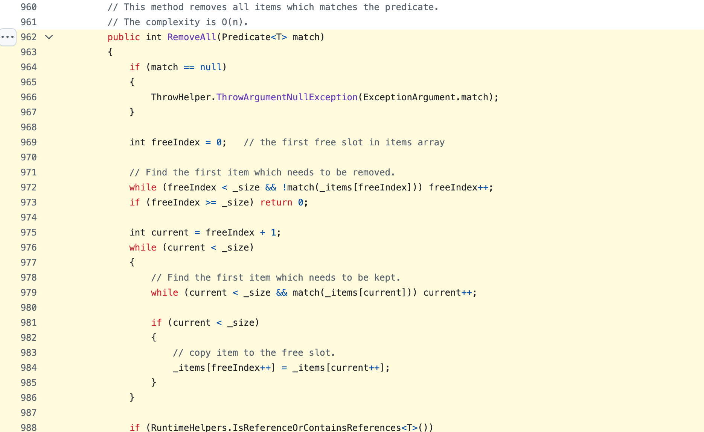
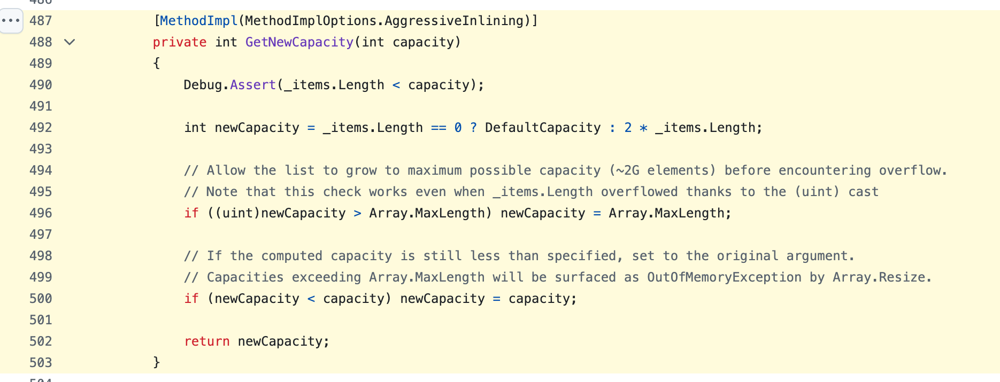

Занятие 7 · раздел 2 · массивы, строки и последовательные техники
Массив:
индексы, проходы,
границы
Как список Python хранит элементы в памяти, где проходят границы среза, как изменить список на месте и почему append в среднем стоит O(1).Как массив и List<T> хранят элементы в памяти, где проходят границы диапазона, как изменить список на месте и почему Add в среднем стоит O(1). Три задачи на один проход с инвариантом: максимальная серия, разворот участка, удаление на месте.
план пары
- 1массив в памяти
- 2границы и срезы
- 3инвариант прохода, задача 1
- 4два указателя, задача 2
- 5копия или на месте
- 6удаление на месте, задача 3
- 7ёмкость и appendAdd
- 8практика и сдача
Вход · задача «удалить лишние элементы из списка»
Две ошибочные версии удаления спама
Занятие начинается с кода, который часто пишут первым. В списке четыре комментария, в двух есть ссылка — это спам. Обе версии удаляют элементы из списка во время прохода по нему. Первая оставляет в списке один спам-комментарий, вторая завершается с IndexError. Вывод настоящий, Python 3.12.
def is_spam(text): return "http" in text comments = ["Отличный урок", "http://win.ru", "http://prize.ru", "Спасибо"] for text in comments: if is_spam(text): comments.remove(text) print(comments)
['Отличный урок', 'http://prize.ru', 'Спасибо']comments = ["Отличный урок", "http://win.ru", "http://prize.ru", "Спасибо"] for i in range(len(comments)): if is_spam(comments[i]): del comments[i] print(comments)
Traceback (most recent call last): File "moderation_v2.py", line 6, in <module> if is_spam(comments[i]): ~~~~~~~~^^^ IndexError: list index out of range
Чтобы объяснить обе ошибки, нужны понятия индекса, границы и инварианта прохода. Занятие вводит их по порядку, и в части 6 этот код разбирается по шагам.
Вход · задача «удалить лишние элементы из списка»
Две ошибочные версии удаления спама
Занятие начинается с кода, который часто пишут первым. В списке четыре комментария, в двух есть ссылка — это спам. Обе версии удаляют элементы из списка во время прохода по нему. Первая завершается с InvalidOperationException, вторая оставляет в списке один спам-комментарий. Вывод настоящий, .NET 10.
var comments = new List<string> { "Отличный урок", "http://win.ru", "http://prize.ru", "Спасибо" }; foreach (var text in comments) { if (IsSpam(text)) comments.Remove(text); } Console.WriteLine(string.Join(", ", comments)); static bool IsSpam(string text) => text.Contains("http");
Unhandled exception. System.InvalidOperationException: Collection was modified; enumeration operation may not execute. at System.Collections.Generic.List`1.Enumerator.MoveNext() at Program.<Main>$(String[] args) in /private/tmp/l7cs/moderation_v1.cs:line 2
var comments = new List<string> { "Отличный урок", "http://win.ru", "http://prize.ru", "Спасибо" }; for (int i = 0; i < comments.Count; i++) { if (IsSpam(comments[i])) comments.RemoveAt(i); } Console.WriteLine(string.Join(", ", comments));
Отличный урок, http://prize.ru, СпасибоЧтобы объяснить обе ошибки, нужны понятия индекса, границы и инварианта прохода. Занятие вводит их по порядку, и в части 6 этот код разбирается по шагам.
Структура занятия · 8 частей
Структура занятия
Материал идёт от одной ячейки памяти к задачам на собеседовании. Каждая часть использует понятия предыдущей: без индекса нельзя определить границу, без границы — инвариант прохода, без инварианта — написать три задачи.
Ячейки, индекс, ссылки, цена доступа, выход за границы.
экраны 5–11Полуинтервал, число итераций, подмассив, ошибки на единицу, пустой вход.
экраны 12–27Определение, пример на сумме, задача 1 «максимальная серия».
экраны 28–37Задача 2 «разворот участка», условие остановки.
экраны 38–45Ссылки на один список, контракт функции.
экраны 46–50Разбор двух ошибочных версий, задача 3, цена способов.
экраны 51–62экраны 51–63Размер и ёмкость, исходник CPython.NET, амортизация.
экраны 63–72экраны 64–73lesson_07, ручная таблица, карточка, справка, итог, ДЗ.
экраны 73–81экраны 74–82Результат пары
Что сдаётся: portfolio/lesson_07
В конце пары у каждого — папка с тремя функциями, тестами к ним и заметкой, где своими словами записаны инвариант и сложность каждой функции. Всё, что разбирается на экранах, нужно для этих файлов.
| Файл | Что в нём |
|---|---|
solution.py | три функции: max_streak, reverse_segment, remove_spam; обязательны первая и третья |
tests.py | 27 публичных тестов и ваши тесты: один воспроизводит найденную ошибку, три — по карточке изменения |
complexity_note.md | инвариант, время и память каждой функции своими словами |
initial_attempt.txt | вопросы к условию и три примера, записанные до кода |
python -m pytest tests.py. Публичные тесты проходят, граничный сценарий воспроизведён отдельным тестом. Вы объясняете ключевой инвариант и сложность по времени и памяти.Результат пары
Что сдаётся: portfolio/lesson_07
В конце пары у каждого — проект с тремя методами, тестами к ним и заметкой, где своими словами записаны инвариант и сложность каждого метода. Всё, что разбирается на экранах, нужно для этих файлов.
| Файл | Что в нём |
|---|---|
Solution.cs | три метода: MaxStreak, ReverseSegment, RemoveSpam; обязательны первый и третий |
Tests.cs | 27 публичных тестов и ваши тесты: один воспроизводит найденную ошибку, три — по карточке изменения |
complexity_note.md | инвариант, время и память каждого метода своими словами |
initial_attempt.txt | вопросы к условию и три примера, записанные до кода |
dotnet run. Публичные тесты проходят, граничный сценарий воспроизведён отдельным тестом. Вы объясняете ключевой инвариант и сложность по времени и памяти.Часть 1 · массив в памяти · определение
Массив
Все задачи занятия работают со списком Pythonс массивом int[] и списком List<T>, а список устроен как массив. Поэтому первое понятие — массив: как он лежит в памяти и что из этого следует для кода.
- Что это
- Структура данных, в которой элементы лежат в памяти подряд, в ячейках одинакового размера.
- Как устроено
- Под массив выделяется один непрерывный блок памяти. Ячейки идут друг за другом без промежутков, у каждой есть номер — индекс.
- Пример
- Шаги за пять дней
[12000, 3000, 11000, 10500, 10000]{ 12000, 3000, 11000, 10500, 10000 }: пять ячеек подряд, день 0 в первой, день 4 в последней. - Зачем в задаче
- К любому элементу можно обратиться по номеру, не просматривая предыдущие. На этом держатся все техники раздела: указатели, окна, проходы.
Часть 1 · индекс · демонстрация адреса
Индекс — смещение от начала блока
Раз ячейки одного размера и идут подряд, адрес любой ячейки вычисляется по её номеру: адрес = начало + индекс × размер ячейки. Индекс показывает, на сколько ячеек сдвинуться от начала. У первой ячейки сдвиг 0, поэтому нумерация начинается с нуля. Нажмите на ячейку, чтобы увидеть расчёт.
Адреса условные: настоящее начало блока в каждом запуске своё. Под ячейкой — индекс слева направо и отрицательный индекс справа налево, о нём экран 9.
Часть 1 · индекс · демонстрация адреса
Индекс — смещение от начала блока
Раз ячейки одного размера и идут подряд, адрес любой ячейки вычисляется по её номеру: адрес = начало + индекс × размер ячейки. У массива int[] ячейка занимает 4 байта. Индекс показывает, на сколько ячеек сдвинуться от начала; у первой сдвиг 0, поэтому нумерация начинается с нуля. Нажмите на ячейку, чтобы увидеть расчёт.
Адреса условные: настоящее начало блока в каждом запуске своё. Под ячейкой — индекс слева направо и индекс с конца ^k, о нём экран 9.
Часть 1 · список Python · определение
Список Python хранит ссылки
Формула адреса требует ячеек одного размера, а число, строка и другой список занимают разное место. Список Python решает это так: в ячейках лежат не сами объекты, а ссылки на них.
- Что это
- Адрес объекта в памяти. На 64-битной системе занимает 8 байт независимо от того, на что указывает.
- Как устроено
- Ячейка списка хранит ссылку, сам объект лежит в другом месте памяти.
- Зачем знать
- Одинаковые ячейки дают доступ по индексу за O(1). Отсюда же поведение
b = aна экране 48: копируется ссылка, список остаётся один.
Часть 1 · типы элементов · определение
Значимые и ссылочные типы в ячейках
Формула адреса требует ячеек одного размера. В C# размер ячейки задаёт тип элемента, объявленный при создании массива или списка. Что именно лежит в ячейке, зависит от вида этого типа.
- Значимый тип
int,double,bool,struct. Ячейка хранит само значение: вint[]— число, 4 байта.- Ссылочный тип
string, массивы, классы,List<T>. Ячейка хранит ссылку — адрес объекта, 8 байт на 64-битной системе. Сам объект лежит в другом месте памяти.- Зачем знать
- В обоих случаях ячейки одного размера, поэтому доступ по индексу стоит O(1). Ссылка объясняет поведение
var backup = feedна экране 48: копируется ссылка, список остаётся один.
int[]: значения прямо в ячейках, по 4 байтаstring[]: в ячейках ссылки, строки в других местах памятиЧасть 1 · цена доступа
Доступ по индексу за O(1), поиск по значению за O(n)
Из формулы адреса следует цена операций. По индексу адрес вычисляется одним умножением и одним сложением при любой длине списка. По значению формулы нет: чтобы найти 10 500, элементы сравниваются по порядку.
| Операция | Что выполняется | Время |
|---|---|---|
steps[3] | адрес по формуле, чтение одной ячейки | O(1) |
steps[3] = 9000 | запись ссылки в одну ячейку | O(1) |
len(steps) | длина хранится в объекте списка, считать её заново не нужно | O(1) |
10500 in steps | сравнение с каждым элементом, пока не найдено совпадение | O(n) |
steps.index(10500) | тот же просмотр, возвращает позицию первого совпадения | O(n) |
Решения раздела строятся на этом различии: алгоритм обращается к элементам по индексу, а поиск по значению внутри цикла не используется, потому что превращает O(n) в O(n²).
Часть 1 · цена доступа
Доступ по индексу за O(1), поиск по значению за O(n)
Из формулы адреса следует цена операций. По индексу адрес вычисляется одним умножением и одним сложением при любой длине массива. По значению формулы нет: чтобы найти 10 500, элементы сравниваются по порядку.
| Операция | Что выполняется | Время |
|---|---|---|
steps[3] | адрес по формуле, чтение одной ячейки | O(1) |
steps[3] = 9000 | запись в одну ячейку | O(1) |
steps.Length, list.Count | длина хранится в объекте, считать её заново не нужно | O(1) |
steps.Contains(10500) | сравнение с каждым элементом, пока не найдено совпадение | O(n) |
list.IndexOf(10500) | тот же просмотр, возвращает позицию первого совпадения | O(n) |
Решения раздела строятся на этом различии: алгоритм обращается к элементам по индексу, а поиск по значению внутри цикла не используется, потому что превращает O(n) в O(n²).
Часть 1 · отрицательный индекс
Отрицательный индекс считается от конца
Python допускает и отрицательные индексы. Это не другой способ хранения: перед вычислением адреса индекс -k заменяется на len(a) - k. Поэтому a[-1] стоит столько же, сколько a[4].
a[-k] — то же, что a[len(a) - k]. Сумма положительного и отрицательного индекса одной ячейки равна len(a): 4 + 1 = 5.
Последний элемент — a[-1], предпоследний — a[-2]. Длину списка при этом писать не нужно.
Если индекс вычисляется в цикле и случайно стал −1, ошибки не будет: вернётся последний элемент. В ошибочной версии задачи 2 правый указатель доходит до −1 — экран 44.
Часть 1 · индекс с конца
Индекс с конца: ^k
Отрицательных индексов в C# нет: a[-1] выбрасывает исключение. Для отсчёта от конца есть оператор ^. Перед вычислением адреса ^k заменяется на a.Length - k, поэтому a[^1] стоит столько же, сколько a[4].
a[^k] — то же, что a[a.Length - k]. ^0 — граница после последнего элемента, a[^0] выбрасывает исключение.
Последний элемент — a[^1], предпоследний — a[^2], три последних — диапазон a[^3..].
Если индекс вычисляется в цикле и стал −1, программа остановится с IndexOutOfRangeException. Ошибка видна сразу, в строке с обращением.
Часть 1 · выход за границы · индекс
Индекс за границами списка: IndexError
У списка длины n допустимы индексы от -n до n - 1. Любой другой индекс не соответствует ни одной ячейке, и Python поднимает исключение. Эта ошибка видна сразу: программа останавливается и показывает строку.
>>> a = [10, 20, 30, 40, 50] >>> a[4], a[-1] (50, 50) >>> a[5] Traceback (most recent call last): File "<stdin>", line 1, in <module> IndexError: list index out of range
| Индекс для a длины 5 | Результат |
|---|---|
a[0] … a[4] | элементы 10 … 50 |
a[-5] … a[-1] | те же элементы с конца |
a[5], a[len(a)] | IndexError |
a[-6] | IndexError |
Часть 1 · выход за границы · индекс
Индекс за границами: IndexOutOfRangeException
У массива длины n допустимы индексы от 0 до n - 1 и от ^n до ^1. Любой другой индекс не соответствует ни одной ячейке, и среда выполнения выбрасывает исключение. У массива и у List<T> исключения разные.
int[] a = { 10, 20, 30, 40, 50 }; Console.WriteLine($"{a[4]} {a[^1]}"); Console.WriteLine(a[5]);
50 50 Unhandled exception. System.IndexOutOfRangeException: Index was outside the bounds of the array. at Program.<Main>$(String[] args) in /private/tmp/l7cs/idx.cs:line 3
| Обращение, длина 5 | Результат |
|---|---|
a[0] … a[4] | элементы 10 … 50 |
a[^5] … a[^1] | те же элементы с конца |
a[5], a[a.Length], a[-1] | IndexOutOfRangeException |
list[5] у List<int> | ArgumentOutOfRangeException |
Часть 1 · выход за границы · срез
Срез за границами списка: без ошибки
Со срезом Python поступает иначе, чем с индексом. Границы среза обрезаются до диапазона [0, len(a)], и исключения нет. Поэтому ошибка в границе среза не останавливает программу: результат просто оказывается короче.
>>> a = [10, 20, 30, 40, 50] >>> a[1:3], a[3:10], a[10:20] ([20, 30], [40, 50], [])
| Срез | После обрезки | Результат |
|---|---|---|
a[1:3] | a[1:3] | [20, 30] |
a[3:10] | a[3:5] | [40, 50] — два элемента вместо семи |
a[10:20] | a[5:5] | [] — пустой список |
Поэтому ошибку границы в срезе обнаруживает только тест, который сравнивает ответ с ожидаемым.
Часть 1 · выход за границы · диапазон
Диапазон за границами: исключение
Диапазон a[l..r] выбирает часть массива, подробно он разобран на следующем экране. Границы диапазона проверяются так же строго, как индекс: если r больше длины, выбрасывается ArgumentOutOfRangeException, и программа останавливается в строке с ошибкой.
int[] a = { 10, 20, 30, 40, 50 }; Console.WriteLine(string.Join(", ", a[1..3])); Console.WriteLine(string.Join(", ", a[3..10]));
20, 30
Unhandled exception. System.ArgumentOutOfRangeException:
Specified argument was out of the range of valid values. (Parameter 'length')| Диапазон | Результат |
|---|---|
a[1..3] | { 20, 30 } |
a[3..5] | { 40, 50 } |
a[3..10] | ArgumentOutOfRangeException |
a[5..5] | пустой массив |
list.GetRange(3, 7) | ArgumentException |
В Python срез за границей не падает, а возвращает укороченный список. Поэтому код, который в C# остановится с исключением, в Python вернёт другой результат без сообщения об ошибке.
Часть 2 · границы · определение среза
Срез
Срезы уже появились на прошлом экране. Теперь точно: какие элементы попадают в срез и что с ними происходит в памяти. От этого зависит, где ставить границы в задачах.
- Что это
- Новый список из элементов исходного с индексами от
lдоr - 1по порядку. - Как устроено
- Python создаёт новый список и копирует в него ссылки на элементы участка. Время и память — O(r − l).
- Пример
steps[1:4]для[12000, 3000, 11000, 10500, 10000]—[3000, 11000, 10500], дни 1, 2 и 3.- Зачем в задаче
- Срезом удобно записать участок и проверить ответ. Внутри цикла каждый срез — копия, поэтому в решениях на O(1) памяти срезы не используются.
Часть 2 · границы · определение диапазона
Диапазон
Диапазоны уже появились на прошлом экране. Теперь точно: какие элементы попадают в диапазон и что с ними происходит в памяти. От этого зависит, где ставить границы в задачах.
- Что это
- Часть массива, списка или строки с индексами от
lдоr - 1по порядку. - Как устроено
- Для массива и строки
a[l..r]создаёт новый объект и копирует элементы: время и память O(r − l).list.GetRange(l, count)тоже копирует.a.AsSpan(l, count)— окно на тот же массив без копии. - Пример
steps[1..4]для{ 12000, 3000, 11000, 10500, 10000 }—{ 3000, 11000, 10500 }, дни 1, 2 и 3.- Зачем в задаче
- Диапазоном удобно записать участок и проверить ответ. Внутри цикла каждый диапазон — копия, поэтому в решениях на O(1) памяти он не используется.
Часть 2 · границы · полуинтервал
Полуинтервал [l, r)
В срезе a[l:r] левая граница входит в участок, правая не входит. У такого способа записи есть название, и он используется во всём Python: в срезах, в range, в задачах на окна.
- Что это
- Участок индексов
l, l + 1, …, r − 1. Квадратная скобка — граница включена, круглая — не включена. - Как устроено
l— индекс первого элемента участка,r— индекс первого элемента после участка.- Пример
[2, 5)— индексы 2, 3, 4.range(2, 5)иa[2:5]дают ровно их.- Зачем в задаче
- С полуинтервалом длина, склейка и пустой участок записываются без поправок на единицу. Следующие три экрана — эти три следствия.
Неделя: days = ["Пн", "Вт", "Ср", "Чт", "Пт", "Сб", "Вс"]. Срез days[1:4] — синие ячейки, красная граница 4 в участок не входит.
>>> days[1:4] → ['Вт', 'Ср', 'Чт'] · days[4] = 'Пт' — первый день после участка
Часть 2 · границы · полуинтервал
Полуинтервал [l, r)
В диапазоне a[l..r] левая граница входит в участок, правая не входит. По тому же правилу записывается обычный цикл for (int i = l; i < r; i++). У такого способа записи есть название.
- Что это
- Участок индексов
l, l + 1, …, r − 1. Квадратная скобка — граница включена, круглая — не включена. - Как устроено
l— индекс первого элемента участка,r— индекс первого элемента после участка.- Пример
[2, 5)— индексы 2, 3, 4.a[2..5]иfor (int i = 2; i < 5; i++)дают ровно их.- Ловушка
Enumerable.Range(start, count)принимает количество:Enumerable.Range(2, 5)— это 2, 3, 4, 5, 6.
С полуинтервалом длина, склейка и пустой участок записываются без поправок на единицу. Следующие три экрана — эти три следствия.
Неделя: string[] days = { "Пн", "Вт", "Ср", "Чт", "Пт", "Сб", "Вс" };. Диапазон days[1..4] — синие ячейки, красная граница 4 в участок не входит.
days[1..4] → { Вт, Ср, Чт } · days[4] = "Пт" — первый день после участка
Часть 2 · полуинтервал · следствие 1 из 3
Длина участка равна r − l
В полуинтервале [l, r) число элементов равно разности границ. При включённой правой границе [l, r] к разности пришлось бы добавлять единицу, и эту единицу часто забывают.
| Запись | Индексы | Длина | Формула |
|---|---|---|---|
a[2:5], полуинтервал [2, 5) | 2, 3, 4 | 3 | 5 − 2 |
| «с 2 по 5 включительно», отрезок [2, 5] | 2, 3, 4, 5 | 4 | 5 − 2 + 1 |
range(0, n) | 0 … n − 1 | n | n − 0 |
Если условие задачи даёт границы включительно, как в задаче 2 «с l по r», то в срезе и в range правая граница записывается как r + 1.
На той же неделе: рабочие дни — days[0:5], выходные — days[5:7]. Длина каждого участка равна разности границ.
>>> days[0:5] → ['Пн', 'Вт', 'Ср', 'Чт', 'Пт'] · 5 − 0 = 5 дней
>>> days[5:7] → ['Сб', 'Вс'] · 7 − 5 = 2 дня
Ловушка. «С 1 по 4 включительно» — это 4 дня, и записывается days[1:5]: ['Вт', 'Ср', 'Чт', 'Пт']. Запись days[1:4] даст только три.
Часть 2 · полуинтервал · следствие 1 из 3
Длина участка равна r − l
В полуинтервале [l, r) число элементов равно разности границ. При включённой правой границе [l, r] к разности пришлось бы добавлять единицу, и эту единицу часто забывают.
| Запись | Индексы | Длина | Формула |
|---|---|---|---|
a[2..5], полуинтервал [2, 5) | 2, 3, 4 | 3 | 5 − 2 |
| «с 2 по 5 включительно», отрезок [2, 5] | 2, 3, 4, 5 | 4 | 5 − 2 + 1 |
for (int i = 0; i < n; i++) | 0 … n − 1 | n | n − 0 |
Если условие задачи даёт границы включительно, как в задаче 2 «с l по r», то в диапазоне правая граница записывается как a[l..(r + 1)], а в цикле — как i <= r.
На той же неделе: рабочие дни — days[0..5], выходные — days[5..7]. Длина каждого участка равна разности границ.
days[0..5] → { Пн, Вт, Ср, Чт, Пт } · 5 − 0 = 5 дней
days[5..7] → { Сб, Вс } · 7 − 5 = 2 дня
Ловушка. «С 1 по 4 включительно» — это 4 дня, и записывается days[1..5]: { Вт, Ср, Чт, Пт }. Запись days[1..4] даст только три.
Часть 2 · полуинтервал · следствие 2 из 3
Соседние участки склеиваются без пропусков
Одна граница k закрывает левый участок и открывает правый. Элемент a[k] попадает ровно в одну часть, поэтому список делится на части и собирается обратно без потерь и повторов.
Граница k делит список на «до k» и «с k».
a[:k] + a[k:] == a
Две границы l ≤ r делят на «до», «участок» и «после». Эти три части понадобятся в задаче 2.
a[:l] + a[l:r] + a[r:] == a
С включённой правой границей в формуле появляется r + 1 в двух местах.
a[:l] + a[l:r+1] + a[r+1:]
Граница 5 делит неделю на рабочие дни и выходные, и обе части вместе дают исходный список.
>>> days[:5] + days[5:] == days → True
>>> days[:1] + days[1:5] + days[5:] == days → True · «Пн» + «Вт…Пт» + «Сб, Вс»
Часть 2 · полуинтервал · следствие 2 из 3
Соседние участки склеиваются без пропусков
Одна граница k закрывает левый участок и открывает правый. Элемент a[k] попадает ровно в одну часть, поэтому массив делится на части и собирается обратно без потерь и повторов.
Граница k делит массив на «до k» и «с k». Вместе они содержат все элементы по одному разу.
a[..k] a[k..]
Две границы l ≤ r делят на «до», «участок» и «после». Эти три части понадобятся в задаче 2.
a[..l] a[l..r] a[r..]
С включённой правой границей в записи появляется r + 1 в двух местах.
a[..l] a[l..(r+1)] a[(r+1)..]
Граница 5 делит неделю на рабочие дни и выходные, и обе части вместе дают исходный массив.
days[..5].Concat(days[5..]).SequenceEqual(days) → True
days[..1], days[1..5], days[5..] — «Пн», «Вт…Пт», «Сб, Вс»
Часть 2 · полуинтервал · следствие 3 из 3
При l = r участок пустой
Полуинтервал [k, k) не содержит ни одного индекса. Пустой участок получается без особого случая в коде: цикл не выполнится, срез вернёт пустой список.
| Выражение | Результат |
|---|---|
a[3:3] | [] |
list(range(5, 5)) | [] |
for i in range(k, k): … | ни одной итерации |
a[len(a):] | [] — хвост после последнего элемента |
del comments[w:]. Если спама не было, w == len(comments), участок пустой, и удалять нечего — отдельный if не нужен.Пустой участок получается сам, без отдельной проверки в коде.
>>> days[3:3] → [] · >>> list(range(3, 3)) → [] · >>> days[7:] → []
В задаче 3 это значит: если спама не было, w = 5 при пяти комментариях, и del comments[5:] удаляет ноль элементов.
Часть 2 · полуинтервал · следствие 3 из 3
При l = r участок пустой
Полуинтервал [k, k) не содержит ни одного индекса. Пустой участок получается без особого случая в коде: цикл не выполнится, диапазон вернёт пустой массив.
| Выражение | Результат |
|---|---|
a[3..3] | пустой массив |
for (int i = k; i < k; i++) | ни одной итерации |
a[a.Length..] | пустой массив — хвост после последнего элемента |
list.RemoveRange(k, 0) | ничего не удаляет |
comments.RemoveRange(w, comments.Count - w). Если спама не было, w == comments.Count, количество удаляемых равно 0 — отдельный if не нужен.Пустой участок получается сам, без отдельной проверки в коде.
days[3..3] → { } · days[7..] → { } · for (int i = 3; i < 3; i++) — ни одной итерации
В задаче 3 это значит: если спама не было, w = 5 при пяти комментариях, и RemoveRange(5, 0) удаляет ноль элементов.
Часть 2 · демонстрация · границы среза
Демонстрация: границы среза
Все три следствия видны, если нарисовать границы между ячейками. Граница 0 стоит перед первым элементом, граница n — после последнего. Нажмите на две границы: первая станет l, вторая r. Проверьте длину, склейку и пустой участок кнопкой a[3:3].
Часть 2 · демонстрация · границы диапазона
Демонстрация: границы диапазона
Все три следствия видны, если нарисовать границы между ячейками. Граница 0 стоит перед первым элементом, граница n — после последнего. Нажмите на две границы: первая станет l, вторая r. Проверьте длину, склейку и пустой участок кнопкой a[3..3].
Часть 2 · число итераций · элементы и границы
Элементов n, границ n + 1
На демонстрации у восьми элементов было девять границ. Это соотношение «забора и столбов»: забор из четырёх пролётов стоит на пяти столбах. Цикл перебирает либо элементы, либо границы, и число итераций у них разное.
| Что перебираем | Сколько при n = 4 | Цикл | Где встречается |
|---|---|---|---|
элементы a[i] — пролёты | n = 4 | for i in range(n) | сумма, счётчик, серия |
| границы, места для вставки — столбы | n + 1 = 5 | for k in range(n + 1) | разрез на a[:k] и a[k:], префиксные суммы (занятие 11) |
У недели 7 дней и 8 границ. Вставить новый день можно в 8 мест: перед «Пн» — это граница 0, после «Вс» — граница 7.
>>> days.insert(0, "Отгул") → отгул перед понедельником
>>> days.insert(7, "Отгул") → отгул после воскресенья · days.insert(8, …) — такой границы нет
Часть 2 · число итераций · элементы и границы
Элементов n, границ n + 1
На демонстрации у восьми элементов было девять границ. Это соотношение «забора и столбов»: забор из четырёх пролётов стоит на пяти столбах. Цикл перебирает либо элементы, либо границы, и число итераций у них разное.
| Что перебираем | Сколько при n = 4 | Цикл | Где встречается |
|---|---|---|---|
элементы a[i] — пролёты | n = 4 | for (int i = 0; i < n; i++) | сумма, счётчик, серия |
| границы, места для вставки — столбы | n + 1 = 5 | for (int k = 0; k <= n; k++) | разрез на a[..k] и a[k..], префиксные суммы (занятие 11) |
У недели 7 дней и 8 границ. Вставить новый день можно в 8 мест: перед «Пн» — это граница 0, после «Вс» — граница 7.
days.Insert(0, "Отгул") → отгул перед понедельником
days.Insert(7, "Отгул") → отгул после воскресенья · Insert(8, …) — такой границы нет
Часть 2 · число итераций · пары и окна
Пар соседей n − 1, окон длины k — n − k + 1
Ещё два частых вида перебора. Пара соседей начинается с каждого элемента, кроме последнего. Окно длины k начинается с каждого элемента, после которого есть ещё k − 1. Число начальных позиций и есть число итераций.
| Пары соседей, n = 4 | |
|---|---|
i = 0 | (a[0], a[1]) |
i = 1 | (a[1], a[2]) |
i = 2 | (a[2], a[3]) |
for i in range(n - 1) — 3 итерации | |
| Окна длины k = 2, n = 4 | |
|---|---|
i = 0 | a[0:2] |
i = 1 | a[1:3] |
i = 2 | a[2:4] |
for i in range(n - k + 1) — 3 итерации | |
Пара соседей — окно длины 2, поэтому формулы совпадают: n − 2 + 1 = n − 1. Окна фиксированного размера — тема занятия 9.
Температура за четыре дня: temps = [12, 15, 14, 18].
пары соседей → (12, 15), (15, 14), (14, 18) · 3 = n − 1
суммы окон длины 2 → 27, 29, 32 · 3 = n − k + 1
Если написать range(len(temps) - 2), последнее окно temps[2:4] с суммой 32 не будет просмотрено.
Часть 2 · число итераций · пары и окна
Пар соседей n − 1, окон длины k — n − k + 1
Ещё два частых вида перебора. Пара соседей начинается с каждого элемента, кроме последнего. Окно длины k начинается с каждого элемента, после которого есть ещё k − 1. Число начальных позиций и есть число итераций.
| Пары соседей, n = 4 | |
|---|---|
i = 0 | (a[0], a[1]) |
i = 1 | (a[1], a[2]) |
i = 2 | (a[2], a[3]) |
for (int i = 0; i < n - 1; i++) — 3 итерации | |
| Окна длины k = 2, n = 4 | |
|---|---|
i = 0 | a[0..2] |
i = 1 | a[1..3] |
i = 2 | a[2..4] |
for (int i = 0; i < n - k + 1; i++) — 3 итерации | |
Пара соседей — окно длины 2, поэтому формулы совпадают: n − 2 + 1 = n − 1. Окна фиксированного размера — тема занятия 9.
Температура за четыре дня: int[] temps = { 12, 15, 14, 18 };
пары соседей → (12, 15), (15, 14), (14, 18) · 3 = n − 1
суммы окон длины 2 → 27, 29, 32 · 3 = n − k + 1
Если написать i < temps.Length - 2, последнее окно temps[2..4] с суммой 32 не будет просмотрено.
Часть 2 · термины условия · 1 из 3
Подмассив
Участок [l, r) в условиях задач называют подмассивом. Рядом с ним стоят два похожих термина, и путать их нельзя: от термина зависит алгоритм. Сначала подмассив.
- Что это
- Элементы массива, идущие подряд, без пропусков.
- Как записать
- Срезом
a[l:r]Диапазономa[l..r]или парой границ(l, r). Непустых подмассивов у списка длины n — n(n + 1) / 2. - Пример
- Для
[3, 8, 1, 9, 4]{ 3, 8, 1, 9, 4 }:[8, 1, 9]{ 8, 1, 9 }— подмассив,[3, 1, 4]{ 3, 1, 4 }— нет, между элементами пропуски. - Зачем в задаче
- Серия дней в задаче 1 и участок в задаче 2 — подмассивы. Задачи на подмассивы решаются проходом, окном или префиксными суммами.
Для a = [3, 8, 1, 9, 4] подмассивы длины 3 — это три участка подряд, как на прошлом экране: n − k + 1 = 5 − 3 + 1.
a[0:3] → [3, 8, 1] · a[1:4] → [8, 1, 9] · a[2:5] → [1, 9, 4]
всех непустых подмассивов 5 · 6 / 2 = 15
Для int[] a = { 3, 8, 1, 9, 4 }; подмассивы длины 3 — это три участка подряд, как на прошлом экране: n − k + 1 = 5 − 3 + 1.
a[0..3] → { 3, 8, 1 } · a[1..4] → { 8, 1, 9 } · a[2..5] → { 1, 9, 4 }
всех непустых подмассивов 5 · 6 / 2 = 15
Часть 2 · термины условия · 2 из 3
Подпоследовательность
Если в подмассиве разрешить пропуски, получится подпоследовательность. Порядок элементов сохраняется, но между ними могут быть пропуски. Вариантов становится намного больше, поэтому и задачи решаются другими методами.
- Что это
- Элементы массива в исходном порядке, между которыми могут быть пропуски.
- Как записать
- Набором возрастающих индексов
i₁ < i₂ < …. Всего подпоследовательностей 2ⁿ, включая пустую. - Пример
- Для
[3, 8, 1, 9, 4]{ 3, 8, 1, 9, 4 }:[3, 1, 4]{ 3, 1, 4 }— подпоследовательность,[1, 3]{ 1, 3 }— нет, порядок нарушен. - Зачем в задаче
- «Самая длинная возрастающая подпоследовательность» решается динамическим программированием (раздел 7), одного прохода для неё недостаточно.
Из того же a = [3, 8, 1, 9, 4] берём элементы с индексами 0, 2 и 4 — между ними пропуски.
[3, 1, 4] — подпоследовательность, подмассивом она не является
подмассивов 15, подпоследовательностей 2⁵ = 32 — вариантов вдвое больше
Из того же int[] a = { 3, 8, 1, 9, 4 }; берём элементы с индексами 0, 2 и 4 — между ними пропуски.
{ 3, 1, 4 } — подпоследовательность, подмассивом она не является
подмассивов 15, подпоследовательностей 2⁵ = 32 — вариантов вдвое больше
Часть 2 · термины условия · 3 из 3
Подстрока и сравнение трёх терминов
Для строк подмассив называется подстрокой: символы идут подряд. Проверка "паси" in "спасибо" даёт True, а "спб" in "спасибо" — False"спасибо".Contains("паси") даёт true, а "спасибо".Contains("спб") — false, хотя буквы с, п, б встречаются в строке в этом порядке.
| Термин | Подряд? | Порядок сохранён? | Сколько вариантов у длины n | Пример для «спасибо» |
|---|---|---|---|---|
| подмассив / подстрока | да | да | n(n + 1) / 2 | "паси" |
| подпоследовательность | нет | да | 2ⁿ | "спб" |
| подмножество | нет | нет | 2ⁿ | буквы {б, п, с} |
На собеседовании термин из условия уточняется до кода вопросом: «элементы должны идти подряд?».
В слове «спасибо» 7 символов. Подстрок длины 4 столько же, сколько окон длины 4: 7 − 4 + 1 = 4.
«спас», «паси», «асиб», «сибо» — подстроки
«спб» — буквы с, п, б с пропусками: подпоследовательность, но не подстрока
Поэтому "паси" in "спасибо" даёт True, а "спб" in "спасибо" — False.
В слове «спасибо» 7 символов. Подстрок длины 4 столько же, сколько окон длины 4: 7 − 4 + 1 = 4.
«спас», «паси», «асиб», «сибо» — подстроки
«спб» — буквы с, п, б с пропусками: подпоследовательность, но не подстрока
Поэтому "спасибо".Contains("паси") даёт true, а "спасибо".Contains("спб") — false.
Часть 2 · ошибки на единицу · определение
Ошибка на единицу
Теперь можно объяснить, откуда берутся ошибки на единицу в задачах на массивы. В записи участка встречаются n, n + 1 и n − 1, две договорённости о правой границе и отсчёт с нуля. Перепутать любую пару — значит сдвинуть границу на один элемент.
- Что это
- Цикл или срез проходит на один элемент больше или меньше нужного.
- Откуда берётся
- Путают включённую и невключённую границу, число элементов и число границ, длину и последний индекс.
- Как проявляется
- На обычных примерах код отвечает верно. Ошибка видна на крайнем элементе:
IndexErrorIndexOutOfRangeException, пропущенный первый или последний элемент. - Как проверить
- Подставить n = 0, 1 и 2 и посчитать итерации вручную. Если при n = 1 цикл по парам выполняется один раз, граница неверна.
Цены за три дня: prices = [100, 120, 90]. Цикл for i in range(len(prices)) даёт i = 0, 1, 2, а пар соседей всего две.
i = 0: prices[1] > prices[0] → 120 > 100 · i = 1: prices[2] > prices[1] → 90 > 120
i = 2: prices[3] → IndexError: list index out of range
Одна лишняя итерация — и программа останавливается на последнем элементе. Верная граница: range(len(prices) - 1).
Цены за три дня: int[] prices = { 100, 120, 90 }; Цикл for (int i = 0; i < prices.Length; i++) даёт i = 0, 1, 2, а пар соседей всего две.
i = 0: prices[1] > prices[0] → 120 > 100 · i = 1: prices[2] > prices[1] → 90 > 120
i = 2: prices[3] → IndexOutOfRangeException
Одна лишняя итерация — и программа останавливается на последнем элементе. Верная граница: i < prices.Length - 1.
Часть 2 · ошибки на единицу · в циклах
Ошибки на единицу в range
Первая группа ошибок — неверное число итераций. В каждой строке ниже цикл перебирает не то, что нужно: элементы вместо пар, окна без последнего, список без первого элемента.
| Код | Что происходит | Исправление |
|---|---|---|
for i in range(len(a)): if a[i + 1] > a[i]: | пар n − 1, а итераций n; на последнем i индекс i + 1 равен len(a) → IndexError | range(len(a) - 1) |
for i in range(len(a) - k): sum(a[i:i + k]) | окон n − k + 1, а итераций n − k; последнее окно не просмотрено, ошибки нет | range(len(a) - k + 1) |
for i in range(1, len(a)): total += a[i] | первый элемент не учтён, ошибки нет, ответ меньше верного | range(len(a)) или for x in a |
Часть 2 · ошибки на единицу · в циклах
Ошибки на единицу в условии цикла for
Первая группа ошибок — неверное число итераций. В каждой строке ниже цикл перебирает не то, что нужно: элементы вместо пар, окна без последнего, массив без первого элемента.
| Код | Что происходит | Исправление |
|---|---|---|
for (int i = 0; i < a.Length; i++) if (a[i + 1] > a[i]) … | пар n − 1, а итераций n; на последнем i индекс i + 1 равен a.Length → IndexOutOfRangeException | i < a.Length - 1 |
for (int i = 0; i < a.Length - k; i++) sums.Add(a[i..(i + k)].Sum()); | окон n − k + 1, а итераций n − k; последнее окно не просмотрено, исключения нет | i <= a.Length - k |
for (int i = 1; i < a.Length; i++) total += a[i]; | первый элемент не учтён, исключения нет, ответ меньше верного | int i = 0 или foreach |
Часть 2 · ошибки на единицу · в индексах и срезах
Ошибки на единицу в индексах и срезах
Вторая группа — неверная граница в одном обращении. Здесь путают длину с последним индексом и включённую границу из условия с невключённой в срезе.
| Код | Что происходит | Исправление |
|---|---|---|
last = a[len(a)] | len(a) — граница после последнего элемента, ячейки с таким индексом нет → IndexError | a[len(a) - 1] или a[-1] |
условие «с l по r включительно» → a[l:r] | срез не включает r, элемент a[r] потерян | a[l:r + 1] |
«последние n событий» → a[len(a) - n:] | при n > len(a) начало отрицательное и считается от конца: вернётся часть списка | a[max(0, len(a) - n):] |
Третья строка — одна из задач домашнего задания: ошибка в ней не даёт исключения, её находит только тест с n больше длины.
Часть 2 · ошибки на единицу · в индексах и диапазонах
Ошибки на единицу в индексах и диапазонах
Вторая группа — неверная граница в одном обращении. Здесь путают длину с последним индексом и включённую границу из условия с невключённой в диапазоне.
| Код | Что происходит | Исправление |
|---|---|---|
var last = a[a.Length]; | a.Length — граница после последнего элемента, ячейки с таким индексом нет → IndexOutOfRangeException | a[a.Length - 1] или a[^1] |
условие «с l по r включительно» → a[l..r] | диапазон не включает r, элемент a[r] потерян | a[l..(r + 1)] |
«последние n событий» →events.GetRange(events.Count - n, n) | при n > Count начальный индекс отрицательный → ArgumentOutOfRangeException | int from = Math.Max(0, events.Count - n);events.GetRange(from, events.Count - from) |
Третья строка — одна из задач домашнего задания: метод правильно отвечает, пока событий не меньше n.
Часть 2 · крайние входы
Пустой и короткий вход
Ошибки на единицу чаще всего проявляются на самых коротких списках. Таблица показывает, что делают частые выражения на пустом списке, на одном и на двух элементах.
| Выражение | a = [] | a = [7] | a = [7, 7] |
|---|---|---|---|
a[0], a[-1] | IndexError | 7 | 7 |
max(a) | ValueError | 7 | 7 |
range(len(a) - 1) | range(−1): пусто | range(0): пусто | одна итерация |
a[1:] | [] | [] | [7] |
for x in a | ни одной итерации | одна | две |
Пустой вход падает только там, где код обращается к конкретному элементу до цикла: a[0], a[-1], max(a). Циклы и срезы на пустом списке работают.
Часть 2 · крайние входы
Пустой и короткий вход
Ошибки на единицу чаще всего проявляются на самых коротких массивах. Таблица показывает, что делают частые выражения на пустом массиве, на одном и на двух элементах.
| Выражение | a = { } | a = { 7 } | a = { 7, 7 } |
|---|---|---|---|
a[0], a[^1] | IndexOutOfRangeException | 7 | 7 |
a.Max() | InvalidOperationException | 7 | 7 |
for (int i = 0; i < a.Length - 1; i++) | условие 0 < −1 ложно: пусто | 0 < 0: пусто | одна итерация |
a[1..] | ArgumentOutOfRangeException | пустой массив | { 7 } |
foreach (var x in a) | ни одной итерации | одна | две |
На пустом массиве падают обращение к элементу, Max() и диапазон с началом больше длины. Циклы for и foreach на пустом массиве работают.
Часть 2 · крайние входы · контракт
Что вернуть на пустом входе
Поведение на пустом входе задаёт условие задачи. Поэтому это один из вопросов, которые задают до решения. В трёх задачах занятия ответы разные.
| Задача | Пустой вход | Почему так | Нужен ли отдельный if |
|---|---|---|---|
| максимальная серия | 0 | дней нет — серий нет | нет: цикл не выполнится, вернётся начальное best = 0 |
| разворот участка | ValueError | участка с l по r в пустом списке нет | проверка границ до цикла покрывает и этот случай |
| удаление на месте | 0, список пустой | удалять нечего | нет: цикл не выполнится, del a[0:] ничего не удалит |
Проверку if not a добавляют, когда код до цикла читает a[0] или вызывает max(a). Если начальные значения выбраны по инварианту, она обычно не нужна — это видно в части 3.
Часть 2 · крайние входы · контракт
Что вернуть на пустом входе
Поведение на пустом входе задаёт условие задачи. Поэтому это один из вопросов, которые задают до решения. В трёх задачах занятия ответы разные.
| Задача | Пустой вход | Почему так | Нужна ли отдельная проверка |
|---|---|---|---|
| максимальная серия | 0 | дней нет — серий нет | нет: цикл не выполнится, вернётся начальное best = 0 |
| разворот участка | ArgumentException | участка с l по r в пустом списке нет | проверка границ до цикла покрывает и этот случай |
| удаление на месте | 0, список пустой | удалять нечего | нет: цикл не выполнится, RemoveRange(0, 0) ничего не удалит |
Проверку if (a.Length == 0) добавляют, когда код до цикла читает a[0] или вызывает Max(). Если начальные значения выбраны по инварианту, она обычно не нужна — это видно в части 3.
Часть 3 · инвариант прохода · определение · возврат к занятию 5
Инвариант прохода
Границы и индексы задают, какие элементы цикл уже просмотрел. Чтобы проход дал верный ответ, нужно ещё знать, что хранят переменные про просмотренную часть. Это утверждение называется инвариантом. На занятии 5 инвариант проверялся на готовом коде, здесь по нему пишется код.
- Что это
- Утверждение о переменных цикла, которое верно перед первой итерацией и остаётся верным после каждой.
- Как устроено
- Обычно имеет вид «переменная X хранит такую-то величину для просмотренной части
a[0:i]a[0..i]». - Пример
- В подсчёте суммы:
sравна суммеa[0:i]a[0..i]. Разбор — на следующем экране. - Зачем в задаче
- Из инварианта следуют начальные значения, тело цикла и то, почему после цикла ответ верный. На собеседовании его называют, объясняя решение.
Корзина: prices = [100, 250, 90], считаем сумму. Перед шагом i = 2 просмотрены первые две цены.
просмотрено: prices[0:2] → [100, 250] · s = 350 = 100 + 250
Инвариант этого цикла звучит так: s равна сумме prices[0:i]. На шаге i = 2 это 350, и утверждение верно.
Корзина: int[] prices = { 100, 250, 90 }; считаем сумму. Перед шагом i = 2 просмотрены первые две цены.
просмотрено: prices[0..2] → { 100, 250 } · s = 350 = 100 + 250
Инвариант этого цикла звучит так: s равна сумме prices[0..i]. На шаге i = 2 это 350, и утверждение верно.
Часть 3 · инвариант прохода · три проверки
Три проверки инварианта на примере суммы
Инвариант проверяется в трёх местах: до цикла, на одном шаге и после цикла. Самый короткий пример — сумма цен в корзине. Те же три проверки дальше повторяются для каждой задачи занятия.
def total(prices): s = 0 # s == sum(prices[0:i]) for i in range(len(prices)): s += prices[i] return s
| Проверка | Вопрос | Для суммы |
|---|---|---|
| 1 · Инициализация | верен ли инвариант до первой итерации? | i = 0, prices[0:0] пуст, его сумма 0 — отсюда s = 0 |
| 2 · Сохранение | если верен перед шагом, верен ли после? | было sum(prices[0:i]), добавили prices[i] — стало sum(prices[0:i+1]) |
| 3 · Завершение | что даёт инвариант после цикла? | i = n: s — сумма всего списка, это ответ |
Хороший ответ на собеседовании: «вот что хранится между итерациями, и вот почему ни один элемент не пропущен». Слабый: указатели двигаются по ощущению, а крайние случаи добавляются отдельными if после каждой найденной ошибки.
Прогон на prices = [100, 250, 90]: после каждого шага s равна сумме уже просмотренных цен.
| i | prices[i] | s до шага | s после шага | инвариант |
|---|---|---|---|---|
| 0 | 100 | 0 | 100 | 100 = сумма первых одной цены |
| 1 | 250 | 100 | 350 | 350 = 100 + 250 |
| 2 | 90 | 350 | 440 | 440 = сумма всех трёх |
>>> total([100, 250, 90]) → 440
Часть 3 · инвариант прохода · три проверки
Три проверки инварианта на примере суммы
Инвариант проверяется в трёх местах: до цикла, на одном шаге и после цикла. Самый короткий пример — сумма цен в корзине. Те же три проверки дальше повторяются для каждой задачи занятия.
static int Total(int[] prices) { int s = 0; // s — сумма prices[0..i] for (int i = 0; i < prices.Length; i++) s += prices[i]; return s; }
| Проверка | Вопрос | Для суммы |
|---|---|---|
| 1 · Инициализация | верен ли инвариант до первой итерации? | i = 0, prices[0..0] пуст, его сумма 0 — отсюда s = 0 |
| 2 · Сохранение | если верен перед шагом, верен ли после? | было: сумма prices[0..i], добавили prices[i] — стало: сумма prices[0..(i+1)] |
| 3 · Завершение | что даёт инвариант после цикла? | i = n: s — сумма всего массива, это ответ |
Хороший ответ на собеседовании: «вот что хранится между итерациями, и вот почему ни один элемент не пропущен». Слабый: указатели двигаются по ощущению, а крайние случаи добавляются отдельными if после каждой найденной ошибки.
Прогон на int[] prices = { 100, 250, 90 };: после каждого шага s равна сумме уже просмотренных цен.
| i | prices[i] | s до шага | s после шага | инвариант |
|---|---|---|---|---|
| 0 | 100 | 0 | 100 | 100 = сумма первых одной цены |
| 1 | 250 | 100 | 350 | 350 = 100 + 250 |
| 2 | 90 | 350 | 440 | 440 = сумма всех трёх |
Total(new[] { 100, 250, 90 }) → 440
Часть 3 · задача 1 · условие
Задача 1: максимальная серия
Первая задача сложнее суммы на одну переменную. Трекер хранит число шагов по дням: steps[0] — первый день, steps[-1]steps[^1] — последний. Цель дня — goal шагов, по умолчанию 10 000. Нужно вернуть длину самой длинной серии дней подряд, в каждый из которых цель достигнута.
| steps | Ответ | Почему |
|---|---|---|
[12000, 3000, 11000, 10500, 10000]{ 12000, 3000, 11000, 10500, 10000 } | 3 | дни 2, 3, 4 подряд; день 0 — серия длины 1 |
[9999]{ 9999 } | 0 | цель не достигнута ни разу |
[]{ } | 0 | дней нет |
Серия — подмассив: дни идут подряд. Функция max_streak(steps, goal=10_000)Метод MaxStreak(steps, goal: 10_000), время O(n), память O(1).
Часть 3 · задача 1 · уточнение условия
Вопросы к условию задачи 1
До кода уточняется всё, что влияет на границы и крайние случаи. Каждый ответ ниже потом превращается в строку кода или в тест.
| Вопрос | Ответ | Что это меняет в коде |
|---|---|---|
| Ровно 10 000 шагов — цель достигнута? | да | сравнение >=; тест test_streak_goal_is_inclusive |
| Что вернуть на пустом списке? | 0 | начальное значение ответа 0; тест test_streak_empty |
| Бывают ли пропущенные дни? | нет, один элемент — один день | соседние элементы — соседние дни |
| Можно ли менять список? | нет, память O(1) | без сортировки и без копий; тест test_streak_does_not_change_input |
Часть 3 · задача 1 · что хранить между итерациями
Две переменные: cur и best
В сумме хватало одной переменной. Здесь одной мало: на каждом дне надо знать, продолжается ли серия и какой длины она сейчас, и отдельно помнить лучшую из уже закончившихся.
Цель достигнута — серия продлевается: cur += 1. Не достигнута — серии, оканчивающейся на этом дне, нет: cur = 0.
После каждого шага best сравнивается с cur. Если текущая серия длиннее, она становится лучшей.
i: cur — длина серии, которая заканчивается на дне i; best — длина лучшей серии среди дней с 0 по i.Пять дней из условия: [12000, 3000, 11000, 10500, 10000]. Видно, зачем нужны обе переменные: на дне 1 серия обрывается, cur обнуляется, но best помнит 1.
| день i | шагов | цель | cur после шага | best после шага |
|---|---|---|---|---|
| 0 | 12 000 | да | 1 | 1 |
| 1 | 3 000 | нет | 0 | 1 |
| 2 | 11 000 | да | 1 | 1 |
| 3 | 10 500 | да | 2 | 2 |
| 4 | 10 000 | да | 3 | 3 |
Пять дней из условия: { 12000, 3000, 11000, 10500, 10000 }. Видно, зачем нужны обе переменные: на дне 1 серия обрывается, cur обнуляется, но best помнит 1.
| день i | шагов | цель | cur после шага | best после шага |
|---|---|---|---|---|
| 0 | 12 000 | да | 1 | 1 |
| 1 | 3 000 | нет | 0 | 1 |
| 2 | 11 000 | да | 1 | 1 |
| 3 | 10 500 | да | 2 | 2 |
| 4 | 10 000 | да | 3 | 3 |
Часть 3 · задача 1 · решение
Решение задачи 1
Код записывает инвариант с прошлого экрана. Выделенные строки — обновление best сразу после роста серии. Три проверки справа — те же, что для суммы.
def max_streak(steps, goal=10_000): best = 0 # лучшая серия среди дней с 0 по i cur = 0 # серия, которая заканчивается на i for s in steps: if s >= goal: cur += 1 if cur > best: best = cur else: cur = 0 return best
| Инициализация | дней не просмотрено, серий нет: cur = best = 0 |
| Сохранение | цель достигнута — серия продлевается на 1, лучшая обновляется сразу; не достигнута — серия, оканчивающаяся на этом дне, пустая |
| Завершение | просмотрены все дни, по инварианту best — лучшая серия среди всех. Досчитывать после цикла нечего |
| Пустой вход | цикл не выполняется, возвращается начальное best = 0 |
Часть 3 · задача 1 · решение
Решение задачи 1
Код записывает инвариант с прошлого экрана. Выделенные строки — обновление best сразу после роста серии. Три проверки справа — те же, что для суммы.
public static int MaxStreak(IReadOnlyList<int> steps, int goal = 10_000) { int best = 0; // лучшая серия среди дней с 0 по i int cur = 0; // серия, которая заканчивается на i foreach (int s in steps) { if (s >= goal) { cur++; if (cur > best) best = cur; } else cur = 0; } return best; }
| Инициализация | дней не просмотрено, серий нет: cur = best = 0 |
| Сохранение | цель достигнута — серия продлевается на 1, лучшая обновляется сразу; не достигнута — серия, оканчивающаяся на этом дне, пустая |
| Завершение | просмотрены все дни, по инварианту best — лучшая серия среди всех. Досчитывать после цикла нечего |
| Пустой вход | цикл не выполняется, возвращается начальное best = 0 |
Часть 3 · демонстрация · проход по дням
Демонстрация: проход по дням
Код прогоняется на семи днях. Синяя рамка — текущая серия cur, жёлтая — лучшая best. Нажимайте «шаг» и сверяйте строку таблицы с инвариантом: после каждого дня отметка должна оставаться ✓.
Часть 3 · типичная ошибка
Ошибка: best обновляется только при обрыве серии
Частая версия переносит обновление best в ветку else: лучшая серия запоминается, когда текущая оборвалась. Если за последней серией нет дня без цели, ветка else для неё не выполнится.
for s in steps: if s >= goal: cur += 1 else: best = max(best, cur) cur = 0 return best
best — лучшая серия среди дней с 0 по i. В этой версии best отстаёт, пока серия продолжается.return max(best, cur) даёт верный ответ, но инвариант внутри цикла остаётся нарушенным. Верная версия обновляет best на каждом шаге роста.Часть 3 · типичная ошибка
Ошибка: best обновляется только при обрыве серии
Частая версия переносит обновление best в ветку else: лучшая серия запоминается, когда текущая оборвалась. Если за последней серией нет дня без цели, ветка else для неё не выполнится.
foreach (int s in steps) { if (s >= goal) cur++; else { best = Math.Max(best, cur); cur = 0; } } return best;
best — лучшая серия среди дней с 0 по i. В этой версии best отстаёт, пока серия продолжается.return Math.Max(best, cur); даёт верный ответ, но инвариант внутри цикла остаётся нарушенным. Верная версия обновляет best на каждом шаге роста.Часть 3 · демонстрация · ошибочная версия
Демонстрация: где нарушается инвариант
Ошибочная версия на входе [12000, 3000, 11000, 10500, 10000]{ 12000, 3000, 11000, 10500, 10000 }. Строки таблицы, после которых best меньше лучшей серии, выделены красным, отметка инварианта — ✗. ФункцияМетод вернёт 1 вместо 3.
Часть 3 · задача 1 · тесты
Тесты к задаче 1
Публичные тесты из tests.pyTests.cs. Каждый проверяет один класс входа, и имя теста его называет: при падении по имени видно, какое допущение нарушено. Ошибочная версия с прошлого экрана роняет выделенный тест.
| Тест | Вход | Ждём | Что проверяет |
|---|---|---|---|
test_streak_empty | []{ } | 0 | пустой вход без отдельного if |
test_streak_single_day_missed | [9999]{ 9999 } | 0 | один элемент, цель не достигнута |
test_streak_goal_is_inclusive | [10000, 10000, 9999, 10000]{ 10000, 10000, 9999, 10000 } | 2 | сравнение >= на границе цели |
test_streak_all_days_reached | четыре дня выше цели | 4 | обрывов нет ни одного |
test_streak_best_series_at_the_end | [12000, 3000, 11000, 10500, 10000]{ 12000, 3000, 11000, 10500, 10000 } | 3 | серия заканчивается вместе со списком |
test_streak_best_series_in_the_middle | лучшая серия внутри | 3 | серия после обрыва начинается с нуля |
test_streak_does_not_change_input | [12000, 3000, 11000]{ 12000, 3000, 11000 } | список тот же | вход не изменён |
Часть 4 · задача 2 · условие
Задача 2: разворот участка
В задаче 1 был один индекс, который шёл слева направо. Во второй задаче индексов два, и они идут навстречу. В плейлисте нужно развернуть порядок треков с позиции l по позицию r, остальные треки остаются на местах. Функция меняет переданный список и ничего не возвращает.Метод меняет переданный список и ничего не возвращает.
| До | l, r | После |
|---|---|---|
A B C D E F | 1, 4 | A E D C B F |
A B C | 1, 1 | A B C |
1 2 3 4 | 0, 3 | 4 3 2 1 |
1 2 3 | 2, 1 | ValueErrorArgumentException |
Часть 4 · задача 2 · уточнение условия
Вопросы к условию задачи 2
В задаче 2 вопросы касаются границ: включена ли правая, что делать с неверными. От ответов зависит начальное значение правого указателя и проверка в начале функции.
| Вопрос | Ответ | Что это меняет в коде |
|---|---|---|
| Правая граница включена? | да, отрезок [l, r] | правый указатель начинается с r; срезомдиапазоном участок был бы a[l:r + 1]a[l..(r + 1)] |
Что при l > r или выходе за список? | ValueErrorArgumentException, список не меняется | проверка 0 <= l <= r < len(tracks)0 <= l && l <= r && r < tracks.Count до цикла |
Что при l == r? | участок из одного трека | ни одного обмена, отдельный if не нужен |
| Вернуть новый список или изменить этот? | изменить этот, вернуть Noneметод void | память O(1), срезыдиапазоны не используются |
Часть 4 · два указателя · определение
Два указателя навстречу
Развернуть участок — значит поменять местами первый и последний элемент, затем второй и предпоследний и так далее к середине. Для этого нужны два индекса, которые двигаются друг к другу. Такие индексы называют указателями.
- Что это
- Индекс в массиве, который двигается по правилу, заданному алгоритмом. В Python — обычная переменная-число.В C# — переменная типа
int. - Навстречу
- Левый
iначинает с начала участка и идёт вправо, правыйj— с конца и идёт влево. Шаг заканчивается, когда они встретились. - Пример
- Участок
B C D E: обмен B и E, затем C и D, затемi > j— готово. - Зачем в задаче
- Каждый элемент участка обрабатывается один раз, дополнительная память — две переменные. Та же схема — в поиске пары с суммой на занятии 8.
Плейлист ["A", "B", "C", "D", "E", "F"], разворачиваем участок с 1 по 4. Указатели начинают с краёв участка: i = 1 («B»), j = 4 («E»).
обмен 1: B ↔ E → A E C D B F · теперь i = 2, j = 3
обмен 2: C ↔ D → A E D C B F · теперь i = 3, j = 2 — необработанного участка нет
Плейлист { "A", "B", "C", "D", "E", "F" }, разворачиваем участок с 1 по 4. Указатели начинают с краёв участка: i = 1 («B»), j = 4 («E»).
обмен 1: B ↔ E → A E C D B F · теперь i = 2, j = 3
обмен 2: C ↔ D → A E D C B F · теперь i = 3, j = 2 — необработанного участка нет
Часть 4 · задача 2 · решение
Решение задачи 2
Сначала проверка границ, потом цикл обменов. Инвариант описывает, что лежит снаружи необработанной середины: там всё уже на итоговых местах.
def reverse_segment(tracks, l, r): if not (0 <= l <= r < len(tracks)): raise ValueError("неверные границы") i, j = l, r while i < j: tracks[i], tracks[j] = tracks[j], tracks[i] i += 1 j -= 1
i по j, уже стоит на итоговом месте. Участок с i по j — необработанная середина.| Инициализация | i = l, j = r: снаружи только треки вне участка, разворот их не касается |
| Сохранение | обмен ставит tracks[i] и tracks[j] на итоговые места, затем обе границы сдвигаются внутрь |
| Завершение | i ≥ j: в середине ноль или один трек, а один трек стоит на своём месте в любом случае |
Часть 4 · задача 2 · решение
Решение задачи 2
Сначала проверка границ, потом цикл обменов. Инвариант описывает, что лежит снаружи необработанной середины: там всё уже на итоговых местах.
public static void ReverseSegment<T>(List<T> tracks, int l, int r) { if (!(0 <= l && l <= r && r < tracks.Count)) throw new ArgumentException("неверные границы"); int i = l, j = r; while (i < j) { (tracks[i], tracks[j]) = (tracks[j], tracks[i]); i++; j--; } }
i по j, уже стоит на итоговом месте. Участок с i по j — необработанная середина.| Инициализация | i = l, j = r: снаружи только треки вне участка, разворот их не касается |
| Сохранение | обмен ставит tracks[i] и tracks[j] на итоговые места, затем обе границы сдвигаются внутрь |
| Завершение | i ≥ j: в середине ноль или один трек, а один трек стоит на своём месте в любом случае |
Запись (tracks[i], tracks[j]) = (tracks[j], tracks[i]) — обмен через кортеж, без временной переменной в коде.
Часть 4 · демонстрация · разворот tracks[1..6]
Демонстрация: разворот участка
Разворачивается участок с 1 по 6 в плейлисте из восьми треков. Серые ячейки — вне участка, зелёные — уже на итоговом месте, белые — необработанная середина между i и j. После каждого обмена зелёная зона растёт с двух сторон.
Часть 4 · условие остановки · нечётная длина
Нечётная длина: указатели встречаются на середине
Условие цикла решает, когда остановиться. При нечётной длине участка указатели приходят в один и тот же средний элемент. Этот элемент в развороте не двигается, поэтому цикл заканчивается при i == j.
| Участок из 5 треков, l = 0, r = 4 | |||
|---|---|---|---|
| После шага | i | j | i < j |
| до цикла | 0 | 4 | да |
| 1 | 1 | 3 | да |
| 2 | 2 | 2 | нет — встретились на среднем треке, два обмена |
Вариант while i <= j тоже корректен: он добавляет один обмен среднего трека с самим собой, список от этого не меняется.
Часть 4 · условие остановки · чётная длина
Чётная длина: указатели перескакивают друг через друга
При чётной длине общего среднего элемента нет: после последнего обмена i оказывается справа от j. Условие i < j при этом становится ложным, и цикл останавливается. Условие i != j остаётся истинным, и цикл продолжает обмены.
| Участок из 4 треков, l = 0, r = 3, условие i != j | |||
|---|---|---|---|
| После шага | i | j | Что происходит |
| до цикла | 0 | 3 | i != j — да |
| 1 | 1 | 2 | да |
| 2 | 2 | 1 | да — указатели разошлись, разворот уже готов |
| 3 | 3 | 0 | обмен (2, 1) отменил шаг 2 |
| 4 | 4 | −1 | обмен (3, 0) отменил шаг 1, участок в исходном порядке |
| 5 | — | — | IndexErrorArgumentOutOfRangeException: tracks[4] |
В тестах занятия условие i != j роняет три теста, в том числе test_reverse_whole_list_even_length.
Часть 4 · сравнение способов
Способы развернуть участок
Тот же участок можно развернуть одной строкой со срезом. По времени способы одинаковы, по памяти — нет: срез создаёт копию участка, об этом был экран 12.
| Код | Время | Дополнительная память | Что происходит |
|---|---|---|---|
два указателя, while i < j | O(k) | O(1) | k // 2 обменов в том же списке; k = r − l + 1 |
t[l:r + 1] = t[l:r + 1][::-1] | O(k) | O(k) | срез справа создаёт копию участка, [::-1] — вторую, затем они записываются на место |
t[l:r + 1] = reversed(t[l:r + 1]) | O(k) | O(k) | одна копия участка, reversed идёт по ней с конца |
t.reverse() | O(n) | O(1) | разворачивает весь список на месте; для участка не подходит |
В рабочем коде строка со срезом читается проще, и при небольших k копия занимает мало памяти. На собеседовании условие «без срезов» ставят, чтобы проверить работу с индексами: где стоят границы, когда остановиться, что происходит при чётной длине.
Часть 4 · сравнение способов
Способы развернуть участок
В .NET есть встроенный разворот участка на месте, и он работает так же, как решение с двумя указателями. Способ с диапазоном и LINQ создаёт копии участка.
| Код | Время | Дополнительная память | Что происходит |
|---|---|---|---|
два указателя, while (i < j) | O(k) | O(1) | k / 2 обменов в том же списке; k = r − l + 1 |
tracks.Reverse(l, r - l + 1) | O(k) | O(1) | встроенный метод List<T>, разворот участка на месте; второй аргумент — количество |
Array.Reverse(arr, l, r - l + 1) | O(k) | O(1) | то же для массива |
arr[l..(r + 1)].Reverse().ToArray() | O(k) | O(k) | диапазон создаёт копию, ToArray() — вторую; исходный массив не меняется |
В рабочем коде используют List<T>.Reverse(index, count). На собеседовании встроенный разворот запрещают, чтобы проверить работу с индексами: где стоят границы, когда остановиться, что происходит при чётной длине.
Часть 5 · копия или на месте · определение
Изменение на месте
Разворот участка меняет переданный список и не создаёт нового. У такого способа работы есть название, и в условиях задач оно встречается как требование.
- Что это
- Алгоритм меняет переданную структуру и использует O(1) дополнительной памяти, не считая самого входа.
- Как устроено
- Вся дополнительная память — несколько переменных-индексов. Результат остаётся в том же объекте списка.
- Пример
reverse_segment,list.sort(),list.reverse()ReverseSegment,list.Sort(),list.Reverse().- Цена
- Исходные данные потеряны. Ошибка в индексах портит вход, и повторить вычисление уже не на чем.
Тот же плейлист до и после вызова reverse_segment(tracks, 1, 4). Новый список не создаётся: меняется тот, который передали.
до: ['A', 'B', 'C', 'D', 'E', 'F']
после: ['A', 'E', 'D', 'C', 'B', 'F'] · функция вернула None
дополнительная память: переменные i и j — это O(1)
Тот же плейлист до и после вызова ReverseSegment(tracks, 1, 4). Новый список не создаётся: меняется тот, который передали.
до: { A, B, C, D, E, F }
после: { A, E, D, C, B, F } · метод объявлен как void
дополнительная память: переменные i и j — это O(1)
Часть 5 · копия или на месте · сравнение
Работа с копией
Второй способ — собрать результат в новом объекте и оставить вход как был. Выбор между способами задаёт контракт функцииметода, и его уточняют вопросом «можно ли менять входной список?».
| На месте | С копией | |
|---|---|---|
| Дополнительная память | O(1) | O(n) |
| Вход после вызова | изменён | такой же, как до вызова |
| Проверка результата | исходный список нужно заранее скопировать в тесте | вход можно сравнить с результатом |
| Риск ошибки | выше: запись может затереть непрочитанный элемент | ниже: чтение и запись идут в разные списки |
| Когда выбирают | данных много, память ограничена, условие требует O(1) | вход нужен после вызова, память не ограничена |
Сравнение на одних данных: orig = [3, 1, 2].
>>> copy = sorted(orig) · copy → [1, 2, 3] · orig → [3, 1, 2] — вход цел, в памяти два списка
>>> orig.sort() · orig → [1, 2, 3] — исходный порядок потерян, второго списка нет
Сравнение на одних данных: var orig = new List<int> { 3, 1, 2 };
var copy = orig.OrderBy(x => x).ToList(); · copy → 1, 2, 3 · orig → 3, 1, 2 — вход цел, в памяти два списка
orig.Sort(); · orig → 1, 2, 3 — исходный порядок потерян, второго списка нет
Часть 5 · снимок Python Tutor
Присваивание не копирует список
В Python изменение на месте видно не только внутри функции. Переменная хранит ссылку, поэтому backup = feed копирует ссылку, и обе переменные указывают на один список. Функция получает ту же ссылку, удаляет последний элемент, и изменение видно через backup.

feed и backup ведут к одному объекту.| Строка | Что происходит |
|---|---|
| 4 | создан список из трёх комментариев, feed ссылается на него |
| 5 | backup получает ту же ссылку |
| 6 | drop_last получает ссылку в параметре comments и вызывает pop() |
| 7 | печать backup — два элемента |
| 8 | feed is backup — True: объект один |
Часть 5 · запуск программы
Присваивание не копирует список
List<T> — ссылочный тип: переменная хранит ссылку на объект. Поэтому var backup = feed копирует ссылку, и обе переменные указывают на один список. Метод получает ту же ссылку, удаляет последний элемент, и изменение видно через backup.
var feed = new List<string> { "Отличный урок", "Спасибо", "http://win.ru" }; var backup = feed; DropLast(feed); Console.WriteLine(string.Join(", ", backup)); Console.WriteLine(ReferenceEquals(feed, backup)); static void DropLast(List<string> comments) => comments.RemoveAt(comments.Count - 1);
Отличный урок, Спасибо True
| Строка | Что происходит |
|---|---|
| 1 | создан список из трёх комментариев, feed хранит ссылку на него |
| 2 | backup получает ту же ссылку |
| 3 | DropLast получает ссылку в параметре comments и вызывает RemoveAt |
| 4 | печать backup — два элемента |
| 5 | ReferenceEquals(feed, backup) — True: объект один |
Часть 5 · копия списка
Как получить отдельный список
Если вход должен сохраниться, копию создают явно. Любой из способов ниже создаёт новый список со ссылками на те же элементы за O(n) времени и памяти.
| Код | Новый список? | Где встречается |
|---|---|---|
b = a | нет, вторая ссылка на тот же список | причина ошибки «список изменился сам» |
f(a) | нет, функция получает ссылку | функция на месте меняет список вызывающего кода |
b = a.copy(), a[:], list(a) | да, O(n) | сохранить вход перед вызовом функции на месте |
В тестах занятия проверяется обратное: same = comments до вызова и same is comments после. Так тест убеждается, что функция изменила тот же объект и не подменила его новым.
Проверка на маленьком списке: копия живёт отдельно, вторая ссылка — нет.
>>> a = [1, 2] · b = a.copy() · b.append(3)
a → [1, 2] · b → [1, 2, 3] · a is b → False
>>> c = a · c.append(3) · a → [1, 2, 3] · a is c → True
Часть 5 · копия списка
Как получить отдельный список
Если вход должен сохраниться, копию создают явно. Любой из способов ниже создаёт новый список или массив за O(n) времени и памяти. Для ссылочных типов копируются ссылки, сами объекты остаются общими.
| Код | Новый объект? | Где встречается |
|---|---|---|
var b = a; | нет, вторая ссылка на тот же список | причина ошибки «список изменился сам» |
F(a) | нет, метод получает ссылку | метод на месте меняет список вызывающего кода |
new List<T>(a), a.ToList() | да, O(n) | сохранить вход перед вызовом метода на месте |
arr[..], (int[])arr.Clone() | да, O(n) | копия массива |
В тестах занятия проверяется обратное: var same = c; до вызова и ReferenceEquals(same, c) после. Так тест убеждается, что метод изменил тот же объект и не подменил его новым.
Проверка на маленьком списке: копия живёт отдельно, вторая ссылка — нет.
var a = new List<int> { 1, 2 }; var b = new List<int>(a); b.Add(3);
a → 1, 2 · b → 1, 2, 3 · ReferenceEquals(a, b) → False
var c = a; c.Add(3); · a → 1, 2, 3 · ReferenceEquals(a, c) → True
Часть 5 · контракт функции
Контракт функции, которая меняет список
Раз функция может менять вход, в контракте записывают, что она возвращает. В Python и в задачах собеседований встречаются три варианта, и в трёх задачах занятия есть все три.
| Контракт | Примеры | Как проверяется тестом |
|---|---|---|
меняет на месте, возвращает None | list.sort(), list.reverse(), reverse_segment | вызов, затем сравнение самого списка |
| не меняет, возвращает результат | sorted(a), a[::-1], max_streak | сравнение результата и проверка, что вход тот же |
| меняет на месте, возвращает число k | remove_spam; LeetCode 27 Remove Element | сравнение k и первых k элементов |
None. Поэтому a = a.sort() записывает в a значение None. В remove_spam число возвращается по условию задачи.Один и тот же список, два вида вызова. Настоящий вывод:
>>> b = [3, 1, 2] · print(b.sort()) → None · print(b) → [1, 2, 3]
>>> print(sorted([3, 1, 2])) → [1, 2, 3] — вход остался прежним
Поэтому запись b = b.sort() теряет список: в b окажется None.
Часть 5 · контракт метода
Контракт метода, который меняет список
Раз метод может менять вход, в контракте записывают, что он возвращает. В .NET и в задачах собеседований встречаются три варианта, и в трёх задачах занятия есть все три.
| Контракт | Примеры | Как проверяется тестом |
|---|---|---|
меняет на месте, возвращает void | list.Sort(), list.Reverse(), ReverseSegment | вызов, затем сравнение самого списка |
| не меняет, возвращает результат | a.OrderBy(x => x).ToList(), arr[1..3], MaxStreak | сравнение результата и проверка, что вход тот же |
| меняет на месте, возвращает число | RemoveSpam — число оставшихся; list.RemoveAll(…) — число удалённых | сравнение числа и содержимого списка |
List<T>, которые меняют список (Sort, Reverse, Clear), возвращают void. Методы LINQ (OrderBy, Where, Reverse из System.Linq) источник не меняют и возвращают новую последовательность.Один и тот же список, два вида вызова. Настоящий вывод:
var b = new List<int> { 3, 1, 2 }; b.Sort(); → b = 1, 2, 3 · метод ничего не возвращает
var sorted = orig.OrderBy(x => x).ToList(); → orig = 3, 1, 2 · sorted = 1, 2, 3
Поэтому var b = list.Sort(); даже не скомпилируется: у метода тип void.
Часть 6 · задача 3 · условие
Задача 3: удаление спама на месте
Третья задача возвращает к коду из начала занятия. Модерация получает список комментариев, спам — комментарий со ссылкой, функция is_spam уже написанаметод IsSpam уже написан. Нужно удалить спам из того же списка, сохранить порядок остальных и вернуть их число.
| До | Ответ | После |
|---|---|---|
["Отличный урок", "http://win.ru", "http://prize.ru", "Спасибо"]{ "Отличный урок", "http://win.ru", "http://prize.ru", "Спасибо" } | 2 | ["Отличный урок", "Спасибо"]{ "Отличный урок", "Спасибо" } |
["http://a.ru"]{ "http://a.ru" } | 0 | []{ } |
[]{ } | 0 | []{ } |
Часть 6 · задача 3 · ограничения
Ограничения задачи 3
Ограничения исключают два очевидных решения: собрать новый список и удалять элементы по одному. Первое нарушает требование к памяти, второе — к времени.
| Ограничение | Причина |
|---|---|
| новый список не создаётся | дополнительная память O(1) |
нет remove() и del a[i] внутри цикла | каждое удаление сдвигает хвост списка: n удалений дают O(n²) |
один del a[k:] после цикла разрешён | обрезка хвоста за одну операцию |
| порядок сохраняется | лента комментариев идёт по времени |
| вернуть число оставшихся | контракт «первые k элементов» |
Часть 6 · задача 3 · ограничения
Ограничения задачи 3
Ограничения исключают три очевидных решения: собрать новый список, удалять элементы по одному и вызвать встроенный RemoveAll. Первое нарушает требование к памяти, второе — к времени, третье решает задачу без вашего кода; как он устроен, показано на экране 61.
| Ограничение | Причина |
|---|---|
| новый список не создаётся, LINQ не используется | дополнительная память O(1) |
нет Remove и RemoveAt внутри цикла | каждое удаление сдвигает хвост списка: n удалений дают O(n²) |
нет RemoveAll | метод делает всю задачу; цель занятия — написать этот проход самому |
один RemoveRange(w, comments.Count - w) после цикла разрешён | обрезка хвоста за одну операцию |
| порядок сохраняется, вернуть число оставшихся | лента идёт по времени; контракт «первые k элементов» |
Часть 6 · разбор версии с del
Разбор версии с del по индексу
Теперь есть всё, чтобы объяснить вторую версию из начала занятия. range(len(comments)) вычисляется один раз до цикла, а длина списка после каждого del уменьшается. Индексы цикла и индексы элементов перестают совпадать.
del comments[i] сдвигает все элементы правее i на одну позицию влево. На место i приходит следующий элемент.
Цикл переходит к i + 1. Элемент, пришедший на место i, не проверяется. Два спама подряд — второй остаётся.
range по-прежнему даёт исходное число индексов, а элементов стало меньше. Последний индекс выходит за список: IndexError.
Следующий экран показывает это на тех же четырёх комментариях. Нарушено утверждение «каждый элемент проверен ровно один раз».
Часть 6 · разбор версии с RemoveAt
Разбор версии с RemoveAt в цикле for
Теперь есть всё, чтобы объяснить вторую версию из начала занятия. Условие i < comments.Count проверяется перед каждым шагом, поэтому индекс не выходит за список и исключения нет. Но после RemoveAt(i) индексы цикла и индексы элементов перестают совпадать.
RemoveAt(i) сдвигает все элементы правее i на одну позицию влево. На место i приходит следующий элемент.
Цикл выполняет i++. Элемент, пришедший на место i, не проверяется. Два спама подряд — второй остаётся.
Вариант int n = comments.Count; for (…; i < n; …) доходит до индексов за концом списка и падает с ArgumentOutOfRangeException.
Следующий экран показывает это на тех же четырёх комментариях. Нарушено утверждение «каждый элемент проверен ровно один раз».
Часть 6 · демонстрация · версия с del
Демонстрация: удаление по индексу в цикле
Красная рамка — элемент, который сдвинулся на проверенную позицию и был пропущен. Следите за столбцом len: он уменьшается, а i продолжает расти до 3.
Часть 6 · демонстрация · версия с RemoveAt
Демонстрация: удаление по индексу в цикле
Красная рамка — элемент, который сдвинулся на проверенную позицию и был пропущен. Следите за столбцом Count: он уменьшается, условие цикла это учитывает, но пропущенный элемент уже позади индекса i.
Часть 6 · разбор версии с remove()
Разбор версии с remove() в цикле for
Первая версия не использует индексы явно, но ошибается по той же причине. Цикл for text in comments хранит внутренний номер текущей позиции и на каждом шаге увеличивает его на 1. remove() сдвигает хвост, и следующий элемент оказывается на уже пройденной позиции.
| Номер позиции в цикле | Список перед шагом | text | Действие |
|---|---|---|---|
| 0 | урок, win, prize, спасибо | урок | оставить |
| 1 | урок, win, prize, спасибо | win | remove → prize сдвигается на позицию 1 |
| 2 | урок, prize, спасибо | спасибо | prize на позиции 1 не проверен |
| 3 | урок, prize, спасибо | — | позиций больше нет, цикл закончен |
Итог совпадает с выводом на экране 2: ['Отличный урок', 'http://prize.ru', 'Спасибо']. Правило для обеих версий: список не меняют по длине во время прохода по нему.
Часть 6 · разбор версии с foreach
Разбор версии с Remove() в цикле foreach
Первая версия из начала занятия падает сразу после первого удаления. Цикл foreach работает через перечислитель списка. List<T> хранит счётчик изменений, а перечислитель на каждом шаге проверяет, что счётчик не изменился с начала обхода.
| Шаг перечислителя | text | Действие | Счётчик изменений |
|---|---|---|---|
| MoveNext · позиция 0 | урок | оставить | как в начале обхода |
| MoveNext · позиция 1 | win | Remove — хвост сдвинулся | увеличился на 1 |
| MoveNext | — | счётчик отличается → InvalidOperationException | проверка не прошла |
Эта защита есть только у foreach. Цикл for по индексам её не имеет и ошибается молча — экран 53. Правило для обеих версий: список не меняют по длине во время прохода по нему.
Часть 6 · указатели чтения и записи · определение
Указатели чтения и записи
Обе ошибки возникают из-за удаления во время прохода. Верное решение ничего не удаляет в цикле: оно переписывает нужные элементы ближе к началу, а хвост обрезает один раз после цикла. Для этого нужны два указателя, которые идут в одну сторону.
Проходит по всем индексам слева направо, каждый ровно один раз. Длина списка во время цикла не меняется, поэтому range(len(comments)) безопасен.
Указывает на позицию, куда записывается следующий обычный комментарий. Сдвигается на 1 только после записи. Всегда w ≤ r.
w ≤ r, запись в comments[w] попадает на уже прочитанную позицию. Непрочитанный элемент затереть нельзя.Лента ["Да", "http://a", "http://b", "Нет", "Ок"]. После трёх шагов прочитано 3 элемента, записано 1: r = 3, w = 1.
шаг r = 3: «Нет» — не спам → comments[1] = comments[3], w = 2
запись идёт в позицию 1, а читаем позицию 3 — непрочитанное впереди не портится
Часть 6 · указатели чтения и записи · определение
Указатели чтения и записи
Обе ошибки возникают из-за удаления во время прохода. Верное решение ничего не удаляет в цикле: оно переписывает нужные элементы ближе к началу, а хвост обрезает один раз после цикла. Для этого нужны два указателя, которые идут в одну сторону.
Проходит по всем индексам слева направо, каждый ровно один раз. Длина списка во время цикла не меняется, поэтому for (int r = 0; r < comments.Count; r++) безопасен.
Указывает на позицию, куда записывается следующий обычный комментарий. Сдвигается на 1 только после записи. Всегда w ≤ r.
w ≤ r, запись в comments[w] попадает на уже прочитанную позицию. Непрочитанный элемент затереть нельзя.Лента { "Да", "http://a", "http://b", "Нет", "Ок" }. После трёх шагов прочитано 3 элемента, записано 1: r = 3, w = 1.
шаг r = 3: «Нет» — не спам → comments[1] = comments[3], w = 2
запись идёт в позицию 1, а читаем позицию 3 — непрочитанное впереди не портится
Часть 6 · три зоны списка
Три зоны списка во время прохода
Два указателя делят список на три полуинтервала. Инвариант задачи 3 — это описание первой зоны.
Все обычные комментарии из просмотренной части, в исходном порядке. Эта зона и станет ответом.
Спам и старые копии уже перенесённых комментариев. Содержимое неважно, оно будет обрезано.
Исходные элементы, к которым цикл ещё не дошёл. Запись сюда не попадает.
r: comments[0:w]comments[0..w] — все обычные комментарии из comments[0:r]comments[0..r], в исходном порядке.Та же лента ["Да", "http://a", "http://b", "Нет", "Ок"] после шага r = 3, когда w = 2:
готово [0, w) → «Да», «Нет» · мусор [w, r) → «http://b», «Нет» (старая копия) · не просмотрено [r, n) → «Ок»
Дубликат «Нет» в зоне мусора — нормально: эта зона будет обрезана.
Та же лента { "Да", "http://a", "http://b", "Нет", "Ок" } после шага r = 3, когда w = 2:
готово [0, w) → «Да», «Нет» · мусор [w, r) → «http://b», «Нет» (старая копия) · не просмотрено [r, n) → «Ок»
Дубликат «Нет» в зоне мусора — нормально: эта зона будет обрезана.
Часть 6 · демонстрация · remove_spam
Демонстрация: удаление на месте
Семь комментариев, три из них спам. Зелёная зона — готово, штриховка — мусор, бледные ячейки — не просмотрено. Обычный комментарий переписывается в позицию w, спам остаётся в мусоре. В последнем кадре хвост обрезается одной операцией.
Часть 6 · демонстрация · RemoveSpam
Демонстрация: удаление на месте
Семь комментариев, три из них спам. Зелёная зона — готово, штриховка — мусор, бледные ячейки — не просмотрено. Обычный комментарий переписывается в позицию w, спам остаётся в мусоре. В последнем кадре хвост обрезается одним вызовом RemoveRange.
Часть 6 · задача 3 · решение
Решение задачи 3
Код записывает демонстрацию: один проход указателем r, запись по w, одна обрезка хвоста после цикла. Три проверки инварианта — справа.
def remove_spam(comments): w = 0 for r in range(len(comments)): if not is_spam(comments[r]): comments[w] = comments[r] w += 1 del comments[w:] return w
| Инициализация | r = 0, w = 0: обе зоны пустые |
| Сохранение | обычный комментарий дописывается в конец зоны «готово», спам пропускается; порядок в зоне совпадает с порядком просмотра |
| Завершение | r = n: в [0:w] все обычные комментарии списка. del comments[w:] убирает мусор |
Обрезка хвоста стоит O(n − w) и выполняется один раз. Если спама нет, w == n и участок [n:] пустой — экран 16.
Часть 6 · задача 3 · решение
Решение задачи 3
Код записывает демонстрацию: один проход указателем r, запись по w, одна обрезка хвоста после цикла. Три проверки инварианта — справа.
public static int RemoveSpam(List<string> comments) { int w = 0; for (int r = 0; r < comments.Count; r++) if (!IsSpam(comments[r])) comments[w++] = comments[r]; comments.RemoveRange(w, comments.Count - w); return w; }
| Инициализация | r = 0, w = 0: обе зоны пустые |
| Сохранение | обычный комментарий дописывается в конец зоны «готово», спам пропускается; порядок в зоне совпадает с порядком просмотра |
| Завершение | r = n: в comments[0..w] все обычные комментарии списка. RemoveRange убирает мусор |
comments[w++] = comments[r] записывает в позицию w, затем увеличивает w. Обрезка хвоста стоит O(n − w) и выполняется один раз; если спама нет, удаляется 0 элементов — экран 16.
Часть 6 · сравнение способов · оценка
Сложность способов удаления
Теперь можно сравнить все способы удалить спам. Две версии из начала дают неверный результат. Из верных одна тратит O(n²) времени, другая O(n) памяти, решение с указателями — O(n) времени и O(1) памяти.
| Способ | Результат | Время | Память |
|---|---|---|---|
remove() в for text in comments | спам пропущен | — | — |
del comments[i] в for i in range(len(...)) | IndexError | — | — |
del a[i] в while с ручным i, который не растёт после удаления | верный | O(n²) | O(1) |
генератор списка a[:] = [x for x in a if not is_spam(x)] | верный | O(n) | O(n) |
| указатели чтения и записи | верный | O(n) | O(1) |
Часть 6 · сравнение способов · оценка
Сложность способов удаления
Теперь можно сравнить все способы удалить спам. Две версии из начала дают неверный результат. Из верных одна тратит O(n²) времени, другая O(n) памяти, а решение с указателями и встроенный RemoveAll — O(n) времени и O(1) памяти.
| Способ | Результат | Время | Память |
|---|---|---|---|
Remove() в foreach | InvalidOperationException | — | — |
RemoveAt(i) в for с i++ | спам пропущен | — | — |
RemoveAt(i) в while, i не растёт после удаления | верный | O(n²) | O(1) |
LINQ: Where(…).ToList(), затем Clear и AddRange | верный | O(n) | O(n) |
| указатели чтения и записи | верный | O(n) | O(1) |
comments.RemoveAll(IsSpam) | верный | O(n) | O(1) |
Часть 6 · исходник · dotnet/runtime, List.cs
Как устроен RemoveAll
Встроенный RemoveAll в .NET написан тем же приёмом, что решение задачи 3. Поэтому его сложность O(n) по времени и O(1) по памяти, и поэтому в задаче он запрещён: это готовое решение.

| В List.cs | В решении задачи 3 |
|---|---|
freeIndex — «первая свободная ячейка» | w, указатель записи |
current | r, указатель чтения |
| строки 972–973: пропустить начало без удалений | запись comments[w] = comments[r] при w == r |
строка 984: _items[freeIndex++] = _items[current++] | comments[w++] = comments[r] |
Array.Clear хвоста и _size = freeIndex | RemoveRange(w, comments.Count - w) |
возвращает _size - freeIndex — число удалённых | возвращает w — число оставшихся |
Часть 6 · замер · Python 3.12, медиана 7 запусков, 30 % спама
Замер трёх верных способов
Оценки с прошлого экрана проверены замером на списках из 10³, 10⁴ и 10⁵ элементов. Рост O(n²) виден сразу, а соотношение двух O(n)-решений объясняется тем, где выполняется цикл.
| Способ | n = 1 000 | n = 10 000 | n = 100 000 |
|---|---|---|---|
del a[i] в while, O(n²) | 0,05 мс | 1,50 мс | 178,31 мс |
| генератор списка, O(n) памяти | 0,01 мс | 0,09 мс | 0,83 мс |
| указатели чтения и записи | 0,02 мс | 0,24 мс | 2,43 мс |
del выросло примерно в 30 и в 120 раз. Каждое удаление сдвигает весь хвост списка, а удалений около 0,3 · n.Замер на ноутбуке автора, time.perf_counter(), копия входа создаётся вне замера. На другой машине числа будут другими, соотношение сохранится.
Часть 6 · замер · .NET 10, Release, медиана 7 запусков, 30 % спама
Замер четырёх верных способов
Оценки с прошлого экрана проверены замером на списках из 10³, 10⁴ и 10⁵ элементов. Рост O(n²) виден сразу, а указатели оказываются быстрее копии: цикл компилируется в машинный код, и второго списка не создаётся.
| Способ | n = 1 000 | n = 10 000 | n = 100 000 |
|---|---|---|---|
RemoveAt(i) в while, O(n²) | 0,02 мс | 1,42 мс | 194,60 мс |
| LINQ-копия, O(n) памяти | 0,01 мс | 0,15 мс | 0,89 мс |
| указатели чтения и записи | 0,01 мс | 0,04 мс | 0,35 мс |
RemoveAll | 0,01 мс | 0,05 мс | 0,57 мс |
RemoveAt выросло примерно в 70 и в 140 раз. Каждое удаление сдвигает весь хвост списка, а удалений около 0,3 · n.RemoveAll вызывает делегат-предикат для каждого элемента, это добавляет время на вызов.Замер на ноутбуке автора, Stopwatch, сборка Release, два первых запуска из девяти отброшены как прогрев, копия входа создаётся вне замера. На другой машине числа будут другими, соотношение сохранится.
Часть 6 · вариант условия
Удаление без сохранения порядка
Если условие не требует сохранять порядок, удаляемый элемент можно заменить последним из непроверенных. Число записей тогда равно числу удалённых комментариев. Вариант выгоден, когда спама мало.
def remove_spam_unordered(comments): i, n = 0, len(comments) while i < n: if is_spam(comments[i]): n -= 1 comments[i] = comments[n] # i не двигается: на место i пришёл # непроверенный элемент else: i += 1 del comments[n:] return n
comments[0:i] — проверенные обычные комментарии, comments[i:n] — непроверенные, comments[n:] — мусор.В ветке if после замены i остаётся на месте. Если сдвинуть i, пришедший элемент не будет проверен — та же ошибка, что в версиях из начала занятия.
Часть 6 · вариант условия
Удаление без сохранения порядка
Если условие не требует сохранять порядок, удаляемый элемент можно заменить последним из непроверенных. Число записей тогда равно числу удалённых комментариев. Вариант выгоден, когда спама мало.
static int RemoveSpamUnordered(List<string> comments) { int i = 0, n = comments.Count; while (i < n) { if (IsSpam(comments[i])) comments[i] = comments[--n]; // i не двигается: на место i пришёл // непроверенный элемент else i++; } comments.RemoveRange(n, comments.Count - n); return n; }
comments[0..i] — проверенные обычные комментарии, comments[i..n] — непроверенные, comments[n..] — мусор.comments[--n] сначала уменьшает n, затем читает элемент. В ветке if после замены i остаётся на месте. Если сдвинуть i, пришедший элемент не будет проверен — та же ошибка, что в версиях из начала занятия.
Часть 7 · динамический массив · постановка
Добавление в конец непрерывного блока
Части 1–6 работали со списком фиксированной длины. Но список умеет расти: append добавляет элемент в конец. Массив при этом должен остаться непрерывным блоком, иначе формула адреса перестанет работать.
Чтобы дописать элемент, сразу за последней ячейкой блока нужна свободная ячейка.
Выделяется новый блок большего размера, все ссылки копируются в него, старый блок освобождается. Это копирование стоит O(n).
Если бы копирование шло при каждом append, n добавлений стоили бы O(n²). Следующие экраны показывают, как Python этого избегает.
Часть 7 · динамический массив · постановка
Добавление в конец непрерывного блока
Массив int[] создаётся с фиксированной длиной и расти не умеет. List<T> умеет: Add добавляет элемент в конец. Внутри списка лежит обычный массив, и он должен оставаться непрерывным блоком, иначе формула адреса перестанет работать.
Чтобы дописать элемент, во внутреннем массиве сразу за последним элементом нужна свободная ячейка.
Создаётся новый массив большей длины, все элементы копируются в него, старый массив забирает сборщик мусора. Это копирование стоит O(n).
Если бы копирование шло при каждом Add, n добавлений стоили бы O(n²). Следующие экраны показывают, как .NET этого избегает.
Часть 7 · размер и ёмкость · определение
Размер и ёмкость
Python выделяет память с запасом: ячеек в блоке больше, чем элементов в списке. Поэтому у списка две величины, и путать их нельзя.
- Размер
- Сколько элементов в списке. Возвращается
len(a), в исходнике CPython — полеob_size. - Ёмкость
- Под сколько ячеек выделена память. Всегда не меньше размера. Из Python напрямую не видна, в CPython — поле
allocated. - Запас
capacity − len. Пока запас есть,appendзаписывает ссылку в свободную ячейку за O(1).- Переезд
- Когда запас кончился, блок заменяется большим с копированием всех ссылок, и появляется новый запас.
Добавляем числа в пустой список и смотрим ёмкость через sys.getsizeof:
len = 1 … 4 → ёмкость 4 · len = 5 → ёмкость 8 · len = 9 → ёмкость 16
при len = 5 в списке 5 значений, а места выделено под 8: запас 3 ячейки
Часть 7 · размер и ёмкость · определение
Размер и ёмкость
List<T> выделяет внутренний массив с запасом: ячеек в нём больше, чем элементов в списке. Поэтому у списка две величины, и в C# обе видны как свойства.
- Размер
- Сколько элементов в списке — свойство
Count, в исходнике поле_size. - Ёмкость
- Длина внутреннего массива — свойство
Capacity. Всегда не меньшеCount. Её можно задать заранее:new List<int>(1000). - Запас
Capacity − Count. Пока запас есть,Addзаписывает элемент в свободную ячейку за O(1).- Переезд
- Когда запас кончился, создаётся массив большей длины и все элементы копируются в него через
Array.Copy.
Добавляем числа в пустой список и смотрим свойство Capacity:
Count = 1 … 4 → Capacity 4 · Count = 5 → Capacity 8 · Count = 9 → Capacity 16
при Count = 5 в списке 5 значений, а места выделено под 8: запас 3 ячейки
Часть 7 · динамический массив · определение
Динамический массив
Массив с запасом и переездами получил отдельное название. Список Python — такой массив, как и аналогичные структуры в других языках.
- Что это
- Массив, который при заполнении сам переезжает в блок большего размера и выделяет место с запасом.
- Как устроено
- Хранит размер и ёмкость. Новая ёмкость вычисляется пропорционально текущему размеру, поэтому переезды становятся всё реже.
- Примеры
listв Python,std::vectorв C++,ArrayListв Java.- Зачем знать
- Объясняет, почему
appendиpop()стоят O(1), аinsert(0, x)иpop(0)— O(n).
Десять вызовов append у пустого списка: ёмкость меняется трижды, остальные семь вызовов пишут в запас.
ёмкость по шагам: 4, 4, 4, 4, 8, 8, 8, 8, 16, 16
переезды на шагах 1, 5 и 9 — дальше промежутки всё длиннее
Часть 7 · динамический массив · определение
Динамический массив
Массив с запасом и переездами получил отдельное название. List<T> — такой массив, как и аналогичные структуры в других языках.
- Что это
- Массив, который при заполнении сам переезжает в блок большего размера и выделяет место с запасом.
- Как устроено
- Хранит размер и ёмкость. Новая ёмкость вычисляется пропорционально текущей, поэтому переезды становятся всё реже.
- Примеры
List<T>в C#,listв Python,std::vectorв C++,ArrayListв Java.- Зачем знать
- Объясняет, почему
AddиRemoveAt(Count - 1)стоят O(1), аInsert(0, x)иRemoveAt(0)— O(n).
Десять вызовов Add у пустого списка: ёмкость меняется трижды, остальные семь вызовов пишут в запас.
Capacity по шагам: 4, 4, 4, 4, 8, 8, 8, 8, 16, 16
переезды на шагах 1, 5 и 9 — дальше промежутки всё длиннее
Часть 7 · эксперимент · sys.getsizeof
Замер ёмкости через sys.getsizeof
Ёмкость из Python не видна, но её можно вычислить: sys.getsizeof возвращает размер объекта списка — 56 байт заголовка и 8 байт на каждую выделенную ячейку, без самих объектов. Программа печатает строку, когда размер изменился.
import sys lst = [] prev = sys.getsizeof(lst) print(0, prev) for i in range(1, 33): lst.append(i) size = sys.getsizeof(lst) if size != prev: print(i, size, (size - 56) // 8) prev = size
0 56 1 88 4 5 120 8 9 184 16 17 248 24 25 312 32
| len после append | байт | ёмкость |
|---|---|---|
| 0 | 56 | 0 |
| 1–4 | 88 | 4 |
| 5–8 | 120 | 8 |
| 9–16 | 184 | 16 |
| 17–24 | 248 | 24 |
| 25–32 | 312 | 32 |
Ёмкость — (размер − 56) // 8. За 32 вызова append переездов было 5, остальные 27 вызовов записали ссылку в запас.
Часть 7 · эксперимент · List<T>.Capacity
Замер ёмкости через Capacity
В C# ёмкость читается прямо из свойства Capacity. Программа добавляет 32 элемента и печатает строку каждый раз, когда ёмкость изменилась.
var list = new List<int>(); int prev = list.Capacity; Console.WriteLine($"0 {prev}"); for (int i = 1; i <= 32; i++) { list.Add(i); if (list.Capacity != prev) { Console.WriteLine($"{i} {list.Capacity}"); prev = list.Capacity; } }
0 0 1 4 5 8 9 16 17 32
| Count после Add | Capacity |
|---|---|
| 0 | 0 |
| 1–4 | 4 |
| 5–8 | 8 |
| 9–16 | 16 |
| 17–32 | 32 |
Первая ёмкость — 4, дальше каждый переезд удваивает её. За 32 вызова Add массив выделялся 4 раза: при первом добавлении и три переезда с копированием; остальные 28 вызовов записали элемент в запас.
Часть 7 · исходник · CPython 3.12, Objects/listobject.c
Формула запаса в функции list_resize
Последовательность 4, 8, 16, 24, 32 из замера задана в исходнике интерпретатора. Функция list_resize вызывается при каждом изменении длины списка и решает, нужен ли переезд и какой будет новая ёмкость.

| 55–59 | если новая длина помещается в выделенную память и не меньше её половины, меняется только поле размера: переезда нет |
| 67 | последовательность ёмкостей 0, 4, 8, 16, 24, 32, 40, 52… — та же, что в замере |
| 71 | newsize + newsize / 8 + 6, округлённое вниз до кратного 4: запас около 12,5 % плюс константа |
| 63–65 | комментарий разработчиков: запаса достаточно для линейного общего времени длинной серии append |
Переезд выполняет PyMem_Realloc. Если за блоком свободно, система расширяет его без копирования; если нет — копирует в новый. Анализ считает худший случай, копирование.
Часть 7 · исходник · dotnet/runtime, List.cs
Формула роста в методе GetNewCapacity
Последовательность 4, 8, 16, 32 из замера задана в исходнике .NET. Метод GetNewCapacity вызывается, когда в массиве нет места, и вычисляет новую длину.

| 492 | пустой массив получает DefaultCapacity — константа 4 в строке 23 файла; иначе длина удваивается |
| 496 | ёмкость не превышает Array.MaxLength, около 2 млрд элементов |
| 500 | если нужно больше удвоенного, например при AddRange, берётся требуемая длина |
Сеттер Capacity создаёт new T[value] и копирует элементы через Array.Copy, поэтому каждый переезд — копирование всех элементов.
Часть 7 · демонстрация · стоимость append
Демонстрация: стоимость append
Стоимость одного append считается в операциях: 1 запись, а при переезде ещё копирование всех элементов. Добавьте 64 элемента в каждом из трёх режимов и сравните линию среднего. При запасе, пропорциональном размеру, она выходит на константу. Без запаса переезд идёт на каждом вызове, и среднее растёт вместе с n.
Часть 7 · демонстрация · стоимость Add
Демонстрация: стоимость Add
Стоимость одного Add считается в операциях: 1 запись, а при переезде ещё копирование всех элементов. Добавьте 64 элемента в каждом из двух режимов и сравните линию среднего. В режиме List<T> она выходит на константу. Без запаса переезд идёт на каждом вызове, и среднее растёт вместе с n.
Часть 7 · амортизированная стоимость · определение
Амортизированная стоимость
На демонстрации отдельный appendAdd иногда стоил десятки операций, а среднее оставалось небольшим. Для такой оценки есть отдельный термин.
- Что это
- Общая стоимость худшей последовательности из n операций, делённая на n.
- Чем отличается от средней
- Вероятности здесь нет: оценка гарантирована для любой последовательности вызовов, в том числе самой неудачной.
- Пример
- «
appendAdd— O(1) амортизированно»: n вызовов подряд стоят O(n), хотя отдельный вызов с переездом стоит O(n). - Зачем в задаче
- Решение, которое собирает ответ через
appendAddв цикле, остаётся O(n). Так его и оценивают на собеседовании.
64 вызова append у пустого списка, посчитано по формуле роста CPython:
переездов 7 · скопировано 176 элементов · записей 64 · всего 240 операций
в среднем 3,75 операции на вызов — это и есть амортизированная стоимость
Самый дорогой вызов стоил 53 операции, самый дешёвый — 1, но их сумма делится на 64 вызова.
64 вызова Add у пустого списка, посчитано по формуле роста List<T>:
переездов 4 · скопировано 60 элементов · записей 64 · всего 124 операции
в среднем 1,94 операции на вызов — это и есть амортизированная стоимость
Самый дорогой вызов стоил 33 операции, самый дешёвый — 1, но их сумма делится на 64 вызова.
Часть 7 · амортизированная стоимость · расчёт
Расчёт при удвоении ёмкости
Проще всего посчитать режим «удвоение»: ёмкость растёт 1, 2, 4, 8… Переезды происходят, когда размер достигает степени двойки, и при переезде копируется столько элементов, сколько было в списке.
| Что считаем | Для n = 64 | В общем виде |
|---|---|---|
| записи новых элементов | 64 | n |
| копирования при переездах | 1 + 2 + 4 + 8 + 16 + 32 = 63 | 1 + 2 + … + n/2 < n |
| всего операций | 127 | < 2n |
| в среднем на один append | 1,98 | < 2 — константа, O(1) |
Сумма копирований — геометрическая прогрессия: каждое слагаемое вдвое больше предыдущего, и вся сумма меньше удвоенного последнего. Числа совпадают с демонстрацией в режиме «удвоение».
Часть 7 · амортизированная стоимость · расчёт
Расчёт для List<T>: удвоение ёмкости
List<T> удваивает ёмкость: 4, 8, 16, 32, 64. Переезд происходит, когда список заполнен, и при переезде копируется столько элементов, сколько было в списке.
| Что считаем | Для n = 64 | В общем виде |
|---|---|---|
| записи новых элементов | 64 | n |
| копирования при переездах | 4 + 8 + 16 + 32 = 60 | 4 + 8 + … + n/2 < n |
| всего операций | 124 | < 2n |
| в среднем на один Add | 1,94 | < 2 — константа, O(1) |
Сумма копирований — геометрическая прогрессия: каждое слагаемое вдвое больше предыдущего, и вся сумма меньше удвоенного последнего. Числа совпадают с демонстрацией в режиме List<T>.
Часть 7 · амортизированная стоимость · другие режимы
Запас ⅛ в CPython и рост без запаса
Константа зависит от того, во сколько раз растёт ёмкость. Пока рост пропорционален размеру, копирования складываются в геометрическую прогрессию и среднее ограничено. Если ёмкость растёт на фиксированное число, прогрессия превращается в арифметическую.
Ёмкость растёт примерно в 1,125 раза. Прогрессия геометрическая, константа больше, чем при удвоении, но среднее ограничено числом: O(1). В демонстрации при n = 64 — 3,75 операции на вызов.
Переезд на каждом вызове. Серия из n append стоит O(n²), в среднем O(n) на вызов. В демонстрации при n = 64 — 32,5 операции на вызов, и число растёт с n.
Для КТП достаточно объяснения: отдельный переезд дорогой, но запас растёт пропорционально размеру, поэтому переезды редкие и их суммарная цена распределяется по всем вызовам.
Часть 7 · амортизированная стоимость · сравнение
Удвоение в .NET и рост без запаса
Константа зависит от того, во сколько раз растёт ёмкость. Пока рост пропорционален размеру, копирования складываются в геометрическую прогрессию и среднее ограничено. Если ёмкость растёт на фиксированное число, прогрессия превращается в арифметическую.
Ёмкость растёт в 2 раза. Прогрессия геометрическая, среднее меньше 2 операций на вызов: O(1). В демонстрации при n = 64 — 1,94 операции на вызов. В CPython запас меньше, около ⅛, и среднее выше, но тоже ограничено.
Переезд на каждом вызове. Серия из n Add стоит O(n²), в среднем O(n) на вызов. В демонстрации при n = 64 — 32,5 операции на вызов, и число растёт с n.
Если число элементов известно заранее, ёмкость задают в конструкторе: new List<int>(n). Переездов тогда не будет совсем.
Часть 7 · справка по list
Сложность операций со списком
Всё, что было в частях 1, 6 и 7, собрано в одну таблицу. Дёшево работать с концом списка и с индексом. Дорого всё, что сдвигает хвост или ищет по значению.
| Операция | Время | Почему |
|---|---|---|
a[i], a[i] = x, len(a) | O(1) | адрес по формуле, длина хранится в объекте |
a.append(x) | O(1) аморт. | запись в свободную ячейку, редкий переезд |
a.pop() | O(1) | последний элемент, хвоста за ним нет |
a.pop(0), a.insert(0, x) | O(n) | весь список сдвигается на одну позицию |
del a[i], a.insert(i, x) | O(n − i) | сдвигается хвост после позиции i |
a.remove(x) | O(n) | поиск значения и сдвиг хвоста |
x in a, a.index(x) | O(n) | просмотр по порядку |
a[l:r] | O(r − l) | новый список, копирование ссылок |
del a[k:] | O(n − k) | освобождение ссылок хвоста, без сдвига |
Оценки по таблице TimeComplexity в вики python.org. Для очереди с добавлением и удалением с обоих концов есть collections.deque — тема занятия 25.
Часть 7 · справка по List<T>
Сложность операций со списком
Всё, что было в частях 1, 6 и 7, собрано в одну таблицу. Дёшево работать с концом списка и с индексом. Дорого всё, что сдвигает хвост или ищет по значению.
| Операция | Время | Почему |
|---|---|---|
list[i], list[i] = x, Count | O(1) | адрес по формуле, длина хранится в объекте |
Add(x) | O(1) аморт. | запись в свободную ячейку, редкий переезд |
RemoveAt(Count - 1) | O(1) | последний элемент, хвоста за ним нет |
RemoveAt(0), Insert(0, x) | O(n) | весь список сдвигается на одну позицию |
RemoveAt(i), Insert(i, x) | O(n − i) | сдвигается хвост после позиции i |
Remove(x) | O(n) | поиск значения и сдвиг хвоста |
Contains(x), IndexOf(x) | O(n) | просмотр по порядку |
GetRange(l, count) | O(count) | новый список, копирование элементов |
RemoveRange(k, Count - k), RemoveAll(p) | O(n) | обрезка хвоста; один проход с указателем записи |
Оценки — по разделу Remarks документации List<T> на learn.microsoft.com и исходнику List.cs. Для очереди с удалением из начала есть Queue<T> — тема занятия 25.
Часть 8 · практика · 30 минут
Практика по стартовому набору lesson_07
Теория закончена, дальше три функции своими руками. В стартовом наборе те же задачи, что разобраны на экранах, и 27 тестов. Решение пишется по инварианту: сначала что хранить между итерациями, потом код.
- Скопировать
lesson_07/вportfolio/lesson_07/личного репозитория, запуститьpython -m pytest tests.py -v. Все тесты падают сNotImplementedError. - До кода записать в
initial_attempt.txtвопросы к условию и три своих примера на задачу. - Решить
max_streak, запуститьpytest -k streak. Затемremove_spam,pytest -k remove. - Задача 2
reverse_segment— расширение, после двух обязательных. - Для каждой функции записать инвариант в
complexity_note.md.
Сортировка входа, новые списки в задаче 3, срезы и reversed() в задаче 2, ИИ и поиск до первой собственной версии.
На 15-й минуте преподаватель смотрит initial_attempt.txt и первую зелёную задачу.
Часть 8 · практика · 30 минут
Практика по стартовому набору lesson_07_cs
Теория закончена, дальше три метода своими руками. В стартовом наборе те же задачи, что разобраны на экранах, и 27 тестов. Решение пишется по инварианту: сначала что хранить между итерациями, потом код.
- Скопировать
lesson_07_cs/вportfolio/lesson_07/личного репозитория, выполнитьdotnet run. Все тесты падают сNotImplementedException. - До кода записать в
initial_attempt.txtвопросы к условию и три своих примера на задачу. - Решить
MaxStreak, запуститьdotnet run -- streak. ЗатемRemoveSpam,dotnet run -- remove. - Задача 2
ReverseSegment— расширение, после двух обязательных. - Для каждого метода записать инвариант в
complexity_note.md.
FAILED streak_empty — NotImplementedException: … FAILED streak_single_day_reached — NotImplementedException: … … 0 passed, 9 failed
Часть 8 · без ИИ и без запуска · 5 минут
Таблица состояния указателей на пяти шагах
Заполните таблицу для remove_spam(["Да", "http://a", "http://b", "Нет", "Ок"])RemoveSpam({ "Да", "http://a", "http://b", "Нет", "Ок" }) по коду с экрана 59. В строке — состояние после шага с номером r. Последний столбец — содержимое списка после шага.
| r | comments[r] | спам | действие | w после шага | список после шага |
|---|---|---|---|---|---|
| 0 | Да | нет | a[0] = a[0], w += 1 | 1 | Да, http://a, http://b, Нет, Ок |
| 1 | http://a | да | пропустить | 1 | Да, http://a, http://b, Нет, Ок |
| 2 | http://b | да | пропустить | 1 | Да, http://a, http://b, Нет, Ок |
| 3 | Нет | нет | a[1] = a[3], w += 1 | 2 | Да, Нет, http://b, Нет, Ок |
| 4 | Ок | нет | a[2] = a[4], w += 1 | 3 | Да, Нет, Ок, Нет, Ок |
После цикла del comments[3:]comments.RemoveRange(3, 2) даёт ["Да", "Нет", "Ок"]{ "Да", "Нет", "Ок" }, функция возвращаетметод возвращает 3. В строках 3 и 4 в зоне мусора остаются старые копии «Нет» и «Ок» — это нормально.
Часть 8 · карточка изменения условия · после зелёных тестов задачи 3
Карточка изменения условия: split_spam
На собеседовании условие часто меняют после рабочего решения. Здесь изменение касается задачи 3: удалять нельзя, спам нужно сохранить. Меняется то, что лежит в зоне [w, r).
Напишите split_spam(comments) -> int. Функция переставляет элементы в том же списке: сначала обычные комментарии в исходном порядке, за ними весь спам в любом порядке. Длина списка не меняется, возвращается число обычных комментариев. Время O(n), память O(1).
| До | Ответ | После |
|---|---|---|
["1", "http://x", "2", "http://y", "3"] | 3 | ["1", "2", "3", …спам…] |
- Записать, чем новый инвариант отличается от инварианта
remove_spam: что теперь лежит в зоне[w, r). - Добавить три теста: без спама, весь спам, спам в начале и в конце.
- Прогнать весь набор, включая старые тесты.
- Дописать строку в
complexity_note.md.
Часть 8 · карточка изменения условия · после зелёных тестов задачи 3
Карточка изменения условия: SplitSpam
На собеседовании условие часто меняют после рабочего решения. Здесь изменение касается задачи 3: удалять нельзя, спам нужно сохранить. Меняется то, что лежит в зоне [w, r).
Напишите public static int SplitSpam(List<string> comments). Метод переставляет элементы в том же списке: сначала обычные комментарии в исходном порядке, за ними весь спам в любом порядке. Длина списка не меняется, возвращается число обычных комментариев. Время O(n), память O(1).
| До | Ответ | После |
|---|---|---|
{ "1", "http://x", "2", "http://y", "3" } | 3 | { "1", "2", "3", …спам… } |
- Записать, чем новый инвариант отличается от инварианта
RemoveSpam: что теперь лежит в зоне[w, r). - Добавить три теста: без спама, весь спам, спам в начале и в конце.
- Прогнать весь набор, включая старые тесты:
dotnet run. - Дописать строку в
complexity_note.md.
Часть 8 · проверка перед сдачей
Проверка перед сдачей и работа с ИИ
Перед сдачей решение проверяется запуском и объяснением. ИИ можно использовать после собственной попытки и только так, чтобы вывод модели проверялся тестами.
После собственной попытки: попросить модель найти крайние случаи, предложить дополнительные тесты или сделать review кода.
Каждый совет модели — запуском тестов. Инвариант и сложность вы доказываете сами, на своём коде.
Сдавать первый сгенерированный ответ, скрывать запрос и diff, принимать тесты без запуска, объяснять код словами модели.
initial_attempt.txt, ai_usage_note.md при использовании, diff, вывод pytestdotnet run, исправление и объяснение решения.
| Перед сдачей | Команда или файл |
|---|---|
| все тесты проходят одной командой | python -m pytest tests.py -vdotnet run |
| найденная ошибка воспроизведена отдельным тестом | блок «Мои тесты» в tests.pyTests.cs |
| инвариант и сложность записаны своими словами | complexity_note.md |
| вопросы и примеры до кода сохранены | initial_attempt.txt |
Справка занятия · симптом → где искать
Справка: симптом и место ошибки
Сводка ошибок занятия для практики и домашней работы. Слева — что видно при запуске, в середине — где искать причину, справа — какой вход её воспроизводит.
| Симптом | Где искать | Проверка |
|---|---|---|
IndexError на последней итерации | цикл по парам соседей идёт до len(a) | посчитать итерации при n = 2 |
IndexError после удаления | длина меняется внутри for i in range(len(a)) | длина не меняется до конца цикла |
| один элемент из двух подряд не обработан | удаление или вставка во время for по тому же списку | прогон на двух одинаковых элементах подряд |
| ответ меньше на последнюю серию или окно | результат обновляется только при событии «обрыв» | тест, где лучший участок в конце |
| потерян последний элемент участка | правая граница «включительно» записана как a[l:r] | участок из одного элемента l == r |
падение на [] | a[0] или max(a) до цикла | первый тест — пустой вход |
| вызывающий код видит изменённый список | функция меняет аргумент, а по контракту не должна | same is a и сравнение с копией входа |
| ответ верный, но медленно на 10⁵ | remove, del a[i], insert(0, x), in внутри цикла | замер на 10⁴ и 10⁵: рост в 100 раз — O(n²) |
Справка занятия · симптом → где искать
Справка: симптом и место ошибки
Сводка ошибок занятия для практики и домашней работы. Слева — что видно при запуске, в середине — где искать причину, справа — какой вход её воспроизводит.
| Симптом | Где искать | Проверка |
|---|---|---|
IndexOutOfRangeException на последней итерации | цикл по парам соседей идёт до a.Length | посчитать итерации при n = 2 |
InvalidOperationException: Collection was modified | Add или Remove внутри foreach по тому же списку | любой вход, где что-то удаляется |
| один элемент из двух подряд не обработан | RemoveAt(i) в цикле for с i++ | прогон на двух одинаковых элементах подряд |
ArgumentOutOfRangeException после удаления | длина сохранена в переменную до цикла, а список уменьшился | длина не меняется до конца цикла |
| ответ меньше на последнюю серию или окно | результат обновляется только при событии «обрыв» | тест, где лучший участок в конце |
| потерян последний элемент участка | правая граница «включительно» записана как a[l..r] | участок из одного элемента l == r |
| падение на пустом массиве | a[0], a[^1], Max() или a[1..] до цикла | первый тест — пустой вход |
| ответ верный, но медленно на 10⁵ | Remove, RemoveAt(i), Insert(0, x), Contains внутри цикла | замер на 10⁴ и 10⁵: рост в 100 раз — O(n²) |
Итог занятия · сравнительная таблица
Итог: сравнение трёх задач
Три задачи отличаются числом и направлением указателей, но решаются одинаково: инвариант описывает обработанную часть, из него следуют начальные значения, тело цикла и ответ.
| Задача | Указатели | Инвариант | Время | Память | Граничные тесты |
|---|---|---|---|---|---|
| максимальная серия | i | cur — серия, оканчивающаяся на i; best — лучшая среди дней с 0 по i | O(n) | O(1) | []{ }, ровно цель, серия в конце |
| разворот участка | i → ← j | всё вне участка с i по j на итоговом месте | O(k) | O(1) | l == r, чётная длина, неверные границы |
| удаление на месте | w ≤ r, оба вправо | [0, w) — обычные из [0, r) по порядку | O(n) | O(1) | весь спам, два подряд, спам по краям |
| appendAdd | — | len ≤ capacityCount ≤ Capacity, запас растёт с размером | O(1) аморт. | запас до ⅛ n | — |
Следующее занятие — два указателя: пара с заданной суммой в отсортированном массиве, удаление дубликатов, сжатие последовательности. Указатели записи и чтения из части 6 используются там без изменений.
Контрольный вопрос · КТП, занятие 7
Какой инвариант остаётся истинным после каждого перемещения границы?
Ответ — для любой из трёх функций вашего solution.pyлюбого из трёх методов вашего Solution.cs: что хранится между итерациями, почему ни один элемент не пропущен и почему отдельный переезд списка дорогой, а серия appendAdd оценивается как O(n).
Домашнее задание № 7 · к занятию 8
Максим Николаевич не хочет задавать домашнее задание. Но очень хочет
- 1Довести
solution.pyВсе 27 публичных тестов проходят.
split_spamиз карточки написана и покрыта тремя своими тестами.complexity_note.mdзаполнен по четырём функциям. - 2Три ошибки на границе ·
bugs_07.pyДля каждой функции: вход, на котором она ошибается, падающий тест, исправление одной строки, повторный прогон.
- 3Поворот плейлиста ·
rotate_rightСдвиг на k позиций вправо на месте тремя вызовами
reverse_segment. Тесты дляk = 0,k = len,k > lenи пустого списка.

Домашнее задание № 7 · к занятию 8
Максим Николаевич не хочет задавать домашнее задание. Но очень хочет
- 1Довести
Solution.csdotnet runпоказывает 27 passed.SplitSpamиз карточки написан и покрыт тремя своими тестами.complexity_note.mdзаполнен по четырём методам. - 2Три ошибки на границе ·
Bugs07.csДля каждого метода: вход, на котором он ошибается, падающий тест, исправление одной строки, повторный прогон.
- 3Поворот плейлиста ·
RotateRightСдвиг на k позиций вправо на месте тремя вызовами
ReverseSegment. Тесты дляk = 0,k = Count,k > Countи пустого списка.
Домашнее задание № 7 · порядок сдачи
Куда положить и как сдать
portfolio/lesson_07/: solution.py, tests.py, tests_bugs_07.py, bugs_07.py, bugs_run.txt, complexity_note.md.
Ветка hw-07, коммиты с содержательными сообщениями, Pull Request в собственную main.
До начала занятия 8. На нём указатели записи и чтения используются в задаче сжатия последовательности.
Зелёный pytest по всем файлам, три падающих до исправления теста к bugs_07.py, пять тестов к rotate_right, заметка без пустых пунктов.
Про ИИ: код и тесты пишете сами — на занятии 8 решение объясняется без подсказок. Оформление .md и редактуру формулировок можно поручить модели. Я сам так делаю всегда, поэтому и вам запрещать не буду.
Домашнее задание № 7 · порядок сдачи
Куда положить и как сдать
portfolio/lesson_07/: Solution.cs, Tests.cs, Bugs07.cs, bugs_run.txt, complexity_note.md.
Ветка hw-07, коммиты с содержательными сообщениями, Pull Request в собственную main.
До начала занятия 8. На нём указатели записи и чтения используются в задаче сжатия последовательности.
dotnet run без падений, три падающих до исправления теста к Bugs07.cs, пять тестов к RotateRight, заметка без пустых пунктов.
Про ИИ: код и тесты пишете сами — на занятии 8 решение объясняется без подсказок. Оформление .md и редактуру формулировок можно поручить модели. Я сам так делаю всегда, поэтому и вам запрещать не буду.